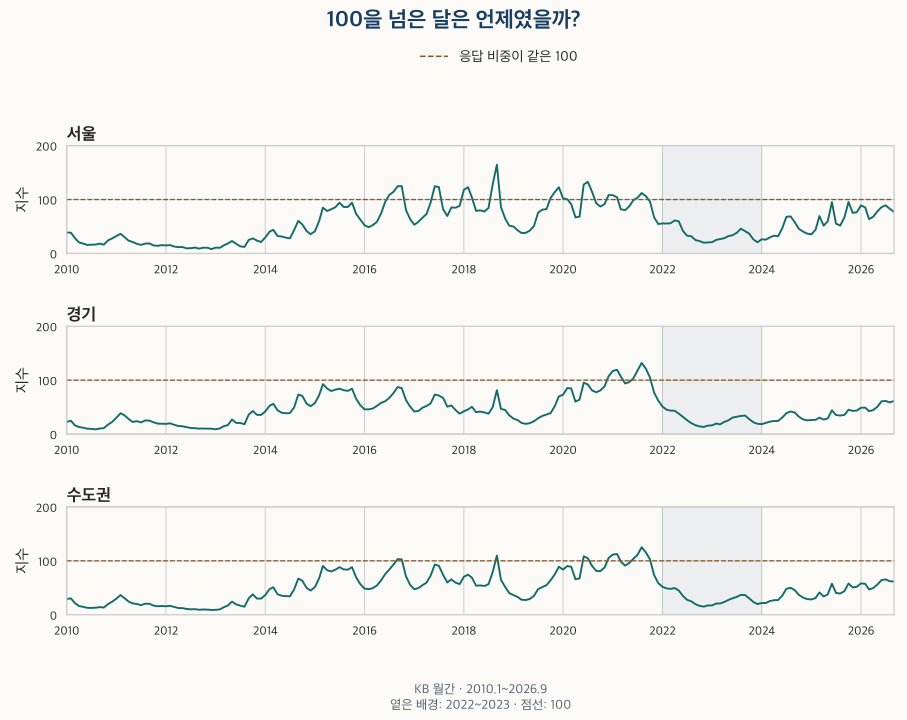
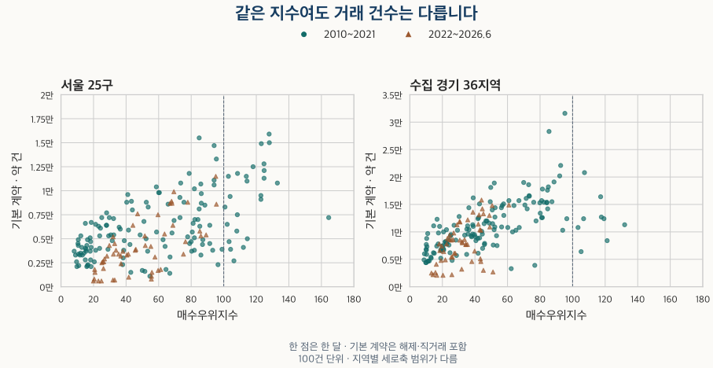

시장 심리 읽기 · 매수우위지수
KB 매수우위지수 100의 뜻: 서울·경기 거래량과 집값도 함께 움직일까?
2010~2026년 서울·경기·수도권 월간 매수우위지수에서 100 초과 구간과 응답 비율을 확인합니다. 실제 아파트 계약·가격의 동행과 반례, 월간·주간 및 최근 자료의 한계를 비교합니다.
분석 기간 · 설문·가격 2010.1~2026.9 · 계약 주 비교 2026.6까지 | 자료 기준일 · 2026-10-04
“매수우위지수가 100을 넘었다”는 기사에서 무엇을 읽어야 할까요? 집을 사려는 사람이 응답상 더 많다는 뜻이지, 거래량이 전년보다 늘었다거나 지금 사면 수익이 난다는 뜻은 아닙니다. 서울·경기·수도권의 2010년 1월~2026년 9월 월간 지수와 아파트 가격, 별도로 집계한 계약 건수를 함께 확인해 보겠습니다.
매수우위지수는 누구에게 무엇을 물어보나요?
KB 공식 월간 표의 설명에 따르면 공인중개사무소에 시장동향을 설문으로 물어 지수화합니다. 선택지는 ‘매수자 많음’, ‘비슷함’, ‘매도자 많음’입니다. KB의 심리지수 해설도 공인중개사 조사표본임을 밝힙니다. 실제 매수 희망자 전원을 센 인원 통계나 계약 건수는 아닙니다.
범위는 0~200입니다. 100 초과는 매수자 많음 응답이 더 많고, 100 미만은 매도자 많음 응답이 더 많다는 뜻입니다. 이름의 ‘우위’를 매수자에게 가격 협상이 유리하다는 뜻으로 바꾸어 읽지 마세요.
가령 가상의 응답 구성이 매수자 많음 30%, 비슷함 40%, 매도자 많음 30%라면 지수는 100입니다. 모두가 비슷하다고 답해야 100인 것은 아닙니다. 지수 120 역시 매수자 수가 매도자 수보다 20% 많다거나 집값이 20% 오른다는 뜻이 아닙니다. 두 응답 비중의 차이가 20%포인트라는 뜻입니다.
이 글의 설문은 주택시장 공통 지표입니다. 비교하는 가격은 KB의 아파트 매매가격지수, 계약은 별도의 아파트 매매 기록입니다. 서로 다른 모집단과 단위를 같은 표에서 확인하는 것이며, 설문이 아파트 구매 의향만을 측정했다고 가정하지 않습니다.
월간 조사는 15일이 포함된 주의 월요일을 기준으로 하고 월말이나 다음 달 초에 발표됩니다. 주간 조사는 별도 통계입니다. 뉴스의 수치가 달라 보이면 먼저 지역과 월간·주간, 조사 기준일을 맞추세요. 주간값을 평균해서 이 글의 월간값을 만든 것이 아닙니다.
서울·경기·수도권에서 100을 넘은 달은 언제였나요?
2010년 1월~2026년 9월의 201개월 가운데 서울은 25개월, 경기는 9개월, 수도권은 13개월이 100을 넘었습니다. 수도권은 KB가 공표한 자체 계열이며 서울·경기 지수의 단순 평균이 아닙니다.

| 지역 | 100 초과 / 전체 월 | 최고 지수 · 해당 월 | 최저 지수 · 해당 월 |
|---|---|---|---|
| 서울 | 25 / 201 | 164.49 · 2018-09 | 8.12 · 2012-12 |
| 경기 | 9 / 201 | 131.98 · 2021-08 | 8.73 · 2010-08 |
| 수도권 | 13 / 201 | 125.16 · 2021-08 | 8.87 · 2012-12 |
최고·최저는 이번에 확인한 201개월 안의 기록입니다. 지수가 처음 발표된 이후의 역대 기록이라고 확장하지 않습니다. 지역별 최고 시점도 달랐습니다. 서울은 2018년 9월, 경기와 수도권은 2021년 8월이 최고였습니다.
100 초과 구간 15개와 그때의 계약·가격 보기
한 달이라도 100 이하가 되면 구간을 끊습니다. 1개월 구간도 남겼습니다. 계약은 서울 25구·수집 경기 36지역의 기본 집계이며, 수도권 전체의 계약 합계는 만들지 않았습니다.
| 지역 | 시작~마지막 월 | 개월 | 기본 계약 월평균 · 약 건 | KB 가격 전월비 평균 |
|---|---|---|---|---|
| 서울 | 2016-07~2016-10 | 4 | 11,600 | 0.56% |
| 서울 | 2017-06~2017-07 | 2 | 13,900 | 0.86% |
| 서울 | 2018-01~2018-03 | 3 | 10,300 | 1.12% |
| 서울 | 2018-08~2018-09 | 2 | 11,100 | 2.50% |
| 서울 | 2019-10~2020-02 | 5 | 9,500 | 0.68% |
| 서울 | 2020-06~2020-08 | 3 | 10,600 | 1.57% |
| 서울 | 2020-12~2021-02 | 3 | 5,700 | 1.51% |
| 서울 | 2021-07~2021-09 | 3 | 3,800 | 1.52% |
| 경기 | 2020-12~2021-03 | 4 | 15,500 | 2.45% |
| 경기 | 2021-06~2021-10 | 5 | 9,900 | 2.38% |
| 수도권 | 2016-09~2016-10 | 2 | 대상 없음 | 0.38% |
| 수도권 | 2018-09~2018-09 | 1 | 대상 없음 | 2.02% |
| 수도권 | 2020-06~2020-07 | 2 | 대상 없음 | 1.16% |
| 수도권 | 2020-12~2021-02 | 3 | 대상 없음 | 1.88% |
| 수도권 | 2021-06~2021-10 | 5 | 대상 없음 | 2.16% |
지수가 100에 못 미치더라도 전월보다 높아졌는지는 별개입니다. 기준선 위·아래는 두 응답의 상대적 크기이고, 지수의 상승·하락은 이전 조사와의 변화입니다. “매수심리 개선”과 “매수자 응답 우세”는 같은 문장이 아닙니다.
전세의 부족 응답은 매수우위와 다른 질문입니다. 전세수급지수와 실제 보증금 비교에서는 가격의 종류와 지수 수준·변화를 바꿨을 때 결과가 어떻게 달라지는지 확인합니다.
100을 넘으면 집값이 오르고, 못 넘으면 내리나요?
주 비교는 2010년 1월~2026년 6월입니다. 가격은 같은 지역의 KB 월간 아파트 매매가격지수를 전월과 비교했습니다. 2010년 1월은 앞 달을 보유하지 않아 변화율 계산에서 빠집니다. 가격지수는 2026년 1월=100으로 기준을 맞춘 값이고, 매수우위지수의 100과는 의미가 다릅니다.
| 지역 | 지수 구분 | 설문 월 | 가격 비교 월 | 가격 상승 월 | 전월비 평균 | 전월비 중앙값 |
|---|---|---|---|---|---|---|
| 서울 | 100 초과 | 25 | 25 | 25 | 1.18% | 1.07% |
| 서울 | 정확히 100 | 0 | 0 | 0 | — | — |
| 서울 | 100 미만 | 173 | 172 | 104 | 0.18% | 0.10% |
| 경기 | 100 초과 | 9 | 9 | 9 | 2.41% | 2.60% |
| 경기 | 정확히 100 | 0 | 0 | 0 | — | — |
| 경기 | 100 미만 | 189 | 188 | 121 | 0.08% | 0.08% |
| 수도권 | 100 초과 | 13 | 13 | 13 | 1.66% | 1.80% |
| 수도권 | 정확히 100 | 0 | 0 | 0 | — | — |
| 수도권 | 100 미만 | 185 | 184 | 116 | 0.11% | 0.12% |
100 초과 달은 세 지역 모두 같은 달의 가격 전월비가 양수였습니다. 이는 관심을 가질 만한 동행입니다. 그러나 100 미만인 달에도 서울 104/172개월, 경기 121/188개월, 수도권 116/184개월에서 가격이 올랐습니다. 100 미만을 곧바로 가격 하락 조건으로 삼으면 이 달들을 설명하지 못합니다.
“그렇다면 100 초과만 매수 신호로 쓰면 되지 않을까?”라는 반론도 가능하지만, 여기서는 그런 전략을 검증하지 않았습니다. 같은 달의 가격과 설문을 나중에 맞춘 비교입니다. 조사 이후 발표까지의 시차, 실제 매수 가능한 가격, 다음 기간 수익·비용을 평가한 결과가 아닙니다. 표의 평균 전월비도 여러 달의 누적 수익률이 아닙니다.
100 초과 월은 전부 2021년까지에 몰려 있습니다. 2022년 1월~2026년 6월의 54개월만 보면 세 지역 모두 100 미만입니다. 최근 기간에 100 초과와 미만을 나눠 같은 조건에서 비교할 표본 자체가 없습니다. 기간과 시장 환경을 그대로 둔 채 지수 하나의 효과만 분리할 수는 없습니다.
거래량이 많다는 것과 전년보다 늘었다는 것은 어떻게 다를까요?
계약은 계약일 기준이며 한 계약에 한 표를 줍니다. 장기 비교의 기본 건수는 유효한 가격·면적을 가진 토지임대부 이외의 보고 계약으로, 해제 신고와 직거래를 포함합니다. 완료된 중개 매매 건수라고 부르면 안 됩니다. 서울은 25구, 경기는 프로젝트에서 수집한 36개 지역입니다. 특히 경기 전체 설문과 수집 경기 계약의 범위가 다릅니다.
아래 계약 건수는 100건 단위로 반올림한 근삿값입니다. 평균·중앙값·전년비도 그 월별 표시값에서 계산했습니다. 다른 글의 정밀한 건수와 끝자리까지 일치하는 표가 아닙니다. 전년비는 전년 같은 달과 비교하며, 2011년 1월부터 계산할 수 있습니다.
| 계약 지역 | 지수 구분 | 개월 | 월평균 · 약 건 | 월 중앙값 · 약 건 | 전년비 비교 월 | 전년비 평균 |
|---|---|---|---|---|---|---|
| 서울 25구 | 100 초과 | 25 | 9,400 | 9,500 | 25 | 102.1% |
| 서울 25구 | 정확히 100 | 0 | — | — | 0 | — |
| 서울 25구 | 100 미만 | 173 | 5,100 | 4,500 | 161 | 26.7% |
| 수집 경기 36지역 | 100 초과 | 9 | 12,400 | 12,400 | 9 | -30.4% |
| 수집 경기 36지역 | 정확히 100 | 0 | — | — | 0 | — |
| 수집 경기 36지역 | 100 미만 | 189 | 10,100 | 9,600 | 177 | 26.7% |

서울의 100 초과 달은 월평균 약 9,400건으로 100 미만의 약 5,100건보다 많았습니다. 수집 경기도 약 12,400건 대 약 10,100건입니다. 그런데 경기의 100 초과 9개월에서 거래량 전년비 평균은 약 −30.4%였습니다. 장기 다른 달보다 건수가 많은 편이어도, 유난히 많았던 전년 같은 달보다 적을 수 있습니다.
월 건수의 크기에는 계절·주택 재고·추세·수집 범위가, 전년비에는 전년의 높고 낮은 기저가 함께 들어갑니다. 이 글은 그것들을 통제한 연구가 아닙니다. 거래 회복을 따로 판단하려면 같은 달의 3년·4년·5년 기준을 비교한 거래량 글처럼 비교의 분모부터 정해야 합니다.
해제·직거래 제외, 통계개편 전후, 최근 3개월을 다르게 보면?
해제와 직거래를 제외한 ‘제외 집계’ 건수는 2022년부터 별도로 표시합니다. 해제 표식은 2020년 2월, 거래 경로 표식은 2021년 11월에 시작하므로 오래전의 미기재를 같은 품질의 확인으로 볼 수 없습니다. 제외 집계 건수의 전년비는 양쪽 연도가 모두 이 조건에 들어가는 2023년부터입니다.
KB는 2022년 11월 통계개편 전후 일부 지표에 변동이 있을 수 있다고 안내합니다. 아래에서 전후 기간을 나누되 원값을 임의로 보정하지 않았습니다. 2026년 7~9월은 신고가 아직 다 모이지 않아 주 비교에서 뺀 잠정 구간입니다. 세 지역 모두 이 3개월에도 100 미만이었고 가격 전월비는 양수였습니다. 최근 계약의 감소를 확정적인 수요 감소로 읽지 않습니다.
서울 · 기간별 비교 전부 보기
| 기간 | 구분 | 개월 | 기본 월평균 | 제외 집계 월평균 | 가격 비교 월 | 가격 상승 월 | 전월비 평균 |
|---|---|---|---|---|---|---|---|
| 전체 · 2010.1~2026.9 | 100 초과 | 25 | 9,400 | — | 25 | 25 | 1.18% |
| 전체 · 2010.1~2026.9 | 정확히 100 | 0 | — | — | 0 | 0 | — |
| 전체 · 2010.1~2026.9 | 100 미만 | 176 | 5,100 | 3,600 | 175 | 107 | 0.20% |
| 잠정 · 2026.7~9 | 100 초과 | 0 | — | — | 0 | 0 | — |
| 잠정 · 2026.7~9 | 정확히 100 | 0 | — | — | 0 | 0 | — |
| 잠정 · 2026.7~9 | 100 미만 | 3 | 3,700 | 3,400 | 3 | 3 | 1.11% |
| 공통 식별 · 2022.1~2026.6 | 100 초과 | 0 | — | — | 0 | 0 | — |
| 공통 식별 · 2022.1~2026.6 | 정확히 100 | 0 | — | — | 0 | 0 | — |
| 공통 식별 · 2022.1~2026.6 | 100 미만 | 54 | 4,100 | 3,700 | 54 | 35 | 0.20% |
| 개편 이전 · 2010.1~2022.10 | 100 초과 | 25 | 9,400 | — | 25 | 25 | 1.18% |
| 개편 이전 · 2010.1~2022.10 | 정확히 100 | 0 | — | — | 0 | 0 | — |
| 개편 이전 · 2010.1~2022.10 | 100 미만 | 129 | 5,300 | 900 | 128 | 76 | 0.16% |
| 개편 이후 · 2022.11~2026.6 | 100 초과 | 0 | — | — | 0 | 0 | — |
| 개편 이후 · 2022.11~2026.6 | 정확히 100 | 0 | — | — | 0 | 0 | — |
| 개편 이후 · 2022.11~2026.6 | 100 미만 | 44 | 4,700 | 4,300 | 44 | 28 | 0.25% |
경기 · 기간별 비교 전부 보기
| 기간 | 구분 | 개월 | 기본 월평균 | 제외 집계 월평균 | 가격 비교 월 | 가격 상승 월 | 전월비 평균 |
|---|---|---|---|---|---|---|---|
| 전체 · 2010.1~2026.9 | 100 초과 | 9 | 12,400 | — | 9 | 9 | 2.41% |
| 전체 · 2010.1~2026.9 | 정확히 100 | 0 | — | — | 0 | 0 | — |
| 전체 · 2010.1~2026.9 | 100 미만 | 192 | 10,100 | 7,300 | 191 | 124 | 0.09% |
| 잠정 · 2026.7~9 | 100 초과 | 0 | — | — | 0 | 0 | — |
| 잠정 · 2026.7~9 | 정확히 100 | 0 | — | — | 0 | 0 | — |
| 잠정 · 2026.7~9 | 100 미만 | 3 | 9,700 | 9,200 | 3 | 3 | 0.92% |
| 공통 식별 · 2022.1~2026.6 | 100 초과 | 0 | — | — | 0 | 0 | — |
| 공통 식별 · 2022.1~2026.6 | 정확히 100 | 0 | — | — | 0 | 0 | — |
| 공통 식별 · 2022.1~2026.6 | 100 미만 | 54 | 7,900 | 7,200 | 54 | 28 | -0.18% |
| 개편 이전 · 2010.1~2022.10 | 100 초과 | 9 | 12,400 | — | 9 | 9 | 2.41% |
| 개편 이전 · 2010.1~2022.10 | 정확히 100 | 0 | — | — | 0 | 0 | — |
| 개편 이전 · 2010.1~2022.10 | 100 미만 | 145 | 10,500 | 2,800 | 144 | 98 | 0.16% |
| 개편 이후 · 2022.11~2026.6 | 100 초과 | 0 | — | — | 0 | 0 | — |
| 개편 이후 · 2022.11~2026.6 | 정확히 100 | 0 | — | — | 0 | 0 | — |
| 개편 이후 · 2022.11~2026.6 | 100 미만 | 44 | 9,000 | 8,200 | 44 | 23 | -0.20% |
수도권 · 기간별 비교 전부 보기
| 기간 | 구분 | 개월 | 기본 월평균 | 제외 집계 월평균 | 가격 비교 월 | 가격 상승 월 | 전월비 평균 |
|---|---|---|---|---|---|---|---|
| 전체 · 2010.1~2026.9 | 100 초과 | 13 | — | — | 13 | 13 | 1.66% |
| 전체 · 2010.1~2026.9 | 정확히 100 | 0 | — | — | 0 | 0 | — |
| 전체 · 2010.1~2026.9 | 100 미만 | 188 | — | — | 187 | 119 | 0.12% |
| 잠정 · 2026.7~9 | 100 초과 | 0 | — | — | 0 | 0 | — |
| 잠정 · 2026.7~9 | 정확히 100 | 0 | — | — | 0 | 0 | — |
| 잠정 · 2026.7~9 | 100 미만 | 3 | — | — | 3 | 3 | 0.86% |
| 공통 식별 · 2022.1~2026.6 | 100 초과 | 0 | — | — | 0 | 0 | — |
| 공통 식별 · 2022.1~2026.6 | 정확히 100 | 0 | — | — | 0 | 0 | — |
| 공통 식별 · 2022.1~2026.6 | 100 미만 | 54 | — | — | 54 | 31 | -0.09% |
| 개편 이전 · 2010.1~2022.10 | 100 초과 | 13 | — | — | 13 | 13 | 1.66% |
| 개편 이전 · 2010.1~2022.10 | 정확히 100 | 0 | — | — | 0 | 0 | — |
| 개편 이전 · 2010.1~2022.10 | 100 미만 | 141 | — | — | 140 | 90 | 0.17% |
| 개편 이후 · 2022.11~2026.6 | 100 초과 | 0 | — | — | 0 | 0 | — |
| 개편 이후 · 2022.11~2026.6 | 정확히 100 | 0 | — | — | 0 | 0 | — |
| 개편 이후 · 2022.11~2026.6 | 100 미만 | 44 | — | — | 44 | 26 | -0.09% |
2022~2023년에는 정말 매도자 응답이 더 많았나요?
세 지역 모두 24개월 내내 ‘매도자 많음’ 비율이 ‘매수자 많음’ 비율보다 높았습니다. 다만 어느 쪽이 더 많다는 비교와 전체 응답의 과반이라는 말도 구별해야 합니다.
| 지역 | 매도 우세 월 | 매수자 많음 평균 | 비슷함 평균 | 매도자 많음 평균 | 매도자 많음 최저~최고 |
|---|---|---|---|---|---|
| 서울 | 24 / 24 | 2.65% | 30.49% | 66.86% | 42.55~82.86% |
| 경기 | 24 / 24 | 2.49% | 22.55% | 74.96% | 51.86~89.34% |
| 수도권 | 24 / 24 | 2.49% | 25.01% | 72.50% | 50.51~87.34% |
서울의 ‘매도자 많음’ 응답은 월별 42.55~82.86%였습니다. 낮은 달에는 전체 응답의 절반에 못 미쳤지만 매수자 많음 응답보다 높았습니다. 따라서 “매월 대다수가 매도자 많음이라고 답했다”보다 실제 비율과 범위를 말하는 편이 정확합니다. 여기서 응답 비중을 매물의 비중이나 실제 매도 희망자 수로 바꾸어 계산할 수는 없습니다.
이 시기의 평균 지수 하나만 읽으면 중립 응답이 얼마나 있었는지, 월별 강도가 얼마나 달랐는지 놓칩니다. 같은 지수라도 세 응답의 조합은 달라질 수 있으므로, 자세히 볼 때는 아래 원표의 세 비율을 함께 확인하세요.
중개업소가 느낀 활발함과 실제 계약의 방향은 매매·전세 거래활발지수와 계약 건수 비교에서 따로 확인할 수 있습니다. 매수자와 매도자의 응답 균형을 물은 이 글과는 질문이 다릅니다.
매수우위지수 뉴스를 읽을 때 무엇부터 확인하나요?
- 지표 이름을 확인합니다. 매수우위는 두 응답의 균형입니다. 거래활발이나 가격전망 지수와 질문·산식이 다릅니다.
- 지역과 주기를 맞춥니다. 서울·경기·수도권, 월간·주간을 구분합니다. 수도권 전체 수치를 관심 구나 단지의 상태로 대신 쓰지 않습니다.
- 수준과 변화를 따로 읽습니다. 100을 넘었는지, 전월보다 높아졌는지, 세 응답의 구성이 어떤지를 각각 봅니다.
- 실제 계약과 가격의 기준을 적습니다. 계약일·자료 조회일, 해제·직거래 처리, 지역 범위와 가격 종류를 맞춥니다. 최근 월의 잠정성을 남깁니다.
- 내 결정을 위한 자료를 더합니다. 실거주자는 예산·상환 계획·통근 조건과 같은 면적의 실제 거래·현재 매물을 확인합니다. 지수 100만으로 매수 시점이나 협상 가능 가격을 정하지 않습니다.
매수자 응답이 강해지는 흐름은 현장을 이해하는 단서가 될 수 있습니다. 다만 거래 건수의 증가, 특정 단지의 가격, 앞으로의 수익으로 넘어갈 때는 각각 다른 근거가 필요합니다. 이 차이를 기억하면 같은 100을 보고도 과도한 결론을 피할 수 있습니다.
100이라는 경계와 별도로 심리가 가격보다 먼저 움직였는지 궁금하다면 전체 시차와 네 사건연도의 전환점 비교를 확인하세요. 같은 달 상관과 실제 예측력은 구분합니다.
지역의 순서가 궁금하다면 서울·경기의 심리 전환 날짜 비교에서 매수우위와 전세 수급의 동월·선후·미대응을 함께 확인해 보세요.
월별 수치·계산 기준·자료 한계
KB 설문과 아파트 매매가격지수는 2010년 1월~2026년 9월 각 201개월입니다. 2026년 10월 3일 수집본을 사용했고, 10월 12일 공식 월간 화면의 2021년 9월~2026년 9월 세 지역·네 항목 732개 표시값을 대조했습니다. 그 이전의 모든 달을 현재 공식 화면에서 다시 읽은 것은 아닙니다. 전기간 원천과 보유 데이터베이스는 별도로 대조했습니다.
계약 자료는 2026년 10월 4일 생성된 보유 자료입니다. 월별 원천 상태와 정제 계약의 가격·면적·날짜·지역·정책을 대조했습니다. 현재 남은 단지 목록을 사용하므로 전체 과거 시장을 완벽하게 복원한 자료가 아닙니다. 원본 중복 병합 자체를 이번 글에서 처음부터 다시 실행한 것은 아닙니다. 경기 36지역은 인천을 포함한 수도권 전체 계약이 아닙니다.
주 비교는 2010년 1월~2026년 6월, 최근 3개월은 별도 표시합니다. 기본/제외 집계 건수와 평균·중앙값은 100건 단위, 전년비는 0.1%포인트 근삿값입니다. 합계나 변화율을 정밀한 원건수로 되돌려 해석하지 마세요. 가격 전월비는 원지수에서 계산하며, 본문 집계는 0.01%포인트, 아래 월별 표는 0.0001%포인트까지 표시합니다. 지수 100 초과·미만과 극값은 반올림 전 값으로 정했습니다.
이 자료에는 정확히 100인 월이 없습니다. 0개월 그룹은 평균을 0으로 채우지 않고 —로 남겼습니다. 수도권 계약의 빈칸도 거래가 0건이라는 뜻이 아닙니다. 같은 달 비교는 발표 당시의 정보나 미래 예측력을 검증한 결과가 아니며 계절·추세·표본 변화를 통제하지 않았습니다. 조사 표본 수와 모든 통계개편의 정량 영향까지 확인한 것은 아닙니다.
출처: KB 월간 매수우위지수, KB 월간 아파트 매매가격지수, 국토교통부 아파트 매매 실거래 자료. 출처 확인일 2026년 10월 12일.
분석·집필: 파파펭귄 (Nobot Kang). 에이전트로 공식 자료 대조와 계산·편집 검토를 보조했습니다.
서울 · 201개월 설문·가격 표
| 월 | 매수자 많음% | 비슷함% | 매도자 많음% | 매수우위지수 | 아파트 매매가격지수 | 가격 전월비% |
|---|---|---|---|---|---|---|
| 2010-01 | 2.15 | 34.59 | 63.25 | 38.90 | 58.013 | — |
| 2010-02 | 1.72 | 35.07 | 63.21 | 38.51 | 58.168 | 0.2680 |
| 2010-03 | 1.11 | 26.65 | 72.24 | 28.88 | 58.157 | -0.0200 |
| 2010-04 | 0.60 | 19.28 | 80.12 | 20.49 | 58.057 | -0.1722 |
| 2010-05 | 0.74 | 16.97 | 82.29 | 18.46 | 57.845 | -0.3648 |
| 2010-06 | 0.27 | 15.33 | 84.40 | 15.87 | 57.518 | -0.5652 |
| 2010-07 | 0.20 | 15.90 | 83.90 | 16.30 | 57.216 | -0.5250 |
| 2010-08 | 0.37 | 15.82 | 83.80 | 16.57 | 56.956 | -0.4543 |
| 2010-09 | 0.65 | 16.89 | 82.46 | 18.19 | 56.811 | -0.2538 |
| 2010-10 | 0.53 | 15.25 | 84.22 | 16.31 | 56.707 | -0.1838 |
| 2010-11 | 1.45 | 21.36 | 77.19 | 24.25 | 56.650 | -0.1003 |
| 2010-12 | 1.26 | 25.38 | 73.36 | 27.90 | 56.690 | 0.0703 |
| 2011-01 | 1.85 | 28.62 | 69.54 | 32.31 | 56.778 | 0.1558 |
| 2011-02 | 2.16 | 32.11 | 65.73 | 36.43 | 56.949 | 0.3010 |
| 2011-03 | 1.37 | 27.89 | 70.74 | 30.63 | 57.032 | 0.1460 |
| 2011-04 | 0.68 | 22.39 | 76.93 | 23.74 | 57.036 | 0.0063 |
| 2011-05 | 0.72 | 19.89 | 79.39 | 21.33 | 56.988 | -0.0840 |
| 2011-06 | 0.46 | 17.04 | 82.50 | 17.96 | 56.921 | -0.1173 |
| 2011-07 | 0.54 | 14.79 | 84.67 | 15.87 | 56.829 | -0.1619 |
| 2011-08 | 0.75 | 16.72 | 82.52 | 18.23 | 56.767 | -0.1094 |
| 2011-09 | 0.78 | 16.96 | 82.25 | 18.53 | 56.705 | -0.1086 |
| 2011-10 | 0.64 | 13.71 | 85.65 | 14.98 | 56.633 | -0.1282 |
| 2011-11 | 0.36 | 13.42 | 86.22 | 14.13 | 56.530 | -0.1803 |
| 2011-12 | 0.45 | 14.50 | 85.05 | 15.40 | 56.440 | -0.1601 |
| 2012-01 | 0.55 | 13.84 | 85.61 | 14.95 | 56.348 | -0.1624 |
| 2012-02 | 0.84 | 13.78 | 85.38 | 15.46 | 56.270 | -0.1390 |
| 2012-03 | 0.38 | 12.07 | 87.55 | 12.83 | 56.130 | -0.2481 |
| 2012-04 | 0.09 | 11.55 | 88.36 | 11.74 | 55.887 | -0.4341 |
| 2012-05 | 0.48 | 11.06 | 88.46 | 12.02 | 55.740 | -0.2625 |
| 2012-06 | 0.20 | 9.19 | 90.61 | 9.58 | 55.569 | -0.3070 |
| 2012-07 | 0.31 | 9.15 | 90.53 | 9.78 | 55.270 | -0.5371 |
| 2012-08 | 0.35 | 10.24 | 89.41 | 10.93 | 55.011 | -0.4688 |
| 2012-09 | 0.26 | 8.41 | 91.32 | 8.94 | 54.656 | -0.6460 |
| 2012-10 | 0.46 | 9.71 | 89.82 | 10.64 | 54.324 | -0.6066 |
| 2012-11 | 0.50 | 9.64 | 89.86 | 10.64 | 54.110 | -0.3954 |
| 2012-12 | 0.00 | 8.12 | 91.88 | 8.12 | 53.912 | -0.3658 |
| 2013-01 | 0.18 | 10.39 | 89.43 | 10.76 | 53.710 | -0.3742 |
| 2013-02 | 0.49 | 9.48 | 90.02 | 10.47 | 53.569 | -0.2617 |
| 2013-03 | 1.34 | 12.30 | 86.35 | 14.99 | 53.432 | -0.2570 |
| 2013-04 | 0.90 | 16.82 | 82.28 | 18.62 | 53.364 | -0.1269 |
| 2013-05 | 1.63 | 19.85 | 78.52 | 23.11 | 53.335 | -0.0543 |
| 2013-06 | 1.03 | 15.86 | 83.11 | 17.92 | 53.224 | -0.2083 |
| 2013-07 | 0.62 | 11.92 | 87.46 | 13.16 | 53.047 | -0.3313 |
| 2013-08 | 0.70 | 10.80 | 88.50 | 12.19 | 52.895 | -0.2874 |
| 2013-09 | 3.12 | 18.82 | 78.06 | 25.05 | 52.868 | -0.0510 |
| 2013-10 | 2.30 | 23.43 | 74.27 | 28.03 | 52.918 | 0.0938 |
| 2013-11 | 1.10 | 21.58 | 77.32 | 23.78 | 52.923 | 0.0101 |
| 2013-12 | 0.60 | 20.06 | 79.33 | 21.27 | 52.922 | -0.0022 |
| 2014-01 | 2.57 | 24.57 | 72.86 | 29.70 | 52.939 | 0.0327 |
| 2014-02 | 5.05 | 30.29 | 64.66 | 40.39 | 53.007 | 0.1279 |
| 2014-03 | 5.06 | 33.75 | 61.19 | 43.88 | 53.131 | 0.2337 |
| 2014-04 | 1.94 | 28.54 | 69.52 | 32.43 | 53.174 | 0.0806 |
| 2014-05 | 1.37 | 28.76 | 69.87 | 31.49 | 53.156 | -0.0321 |
| 2014-06 | 1.40 | 26.51 | 72.10 | 29.30 | 53.104 | -0.0987 |
| 2014-07 | 1.21 | 25.59 | 73.20 | 28.02 | 53.101 | -0.0063 |
| 2014-08 | 4.47 | 34.36 | 61.17 | 43.29 | 53.117 | 0.0300 |
| 2014-09 | 11.15 | 38.16 | 50.69 | 60.46 | 53.281 | 0.3099 |
| 2014-10 | 5.62 | 42.33 | 52.05 | 53.57 | 53.437 | 0.2920 |
| 2014-11 | 2.60 | 36.32 | 61.08 | 41.52 | 53.491 | 0.1013 |
| 2014-12 | 1.89 | 31.96 | 66.15 | 35.74 | 53.499 | 0.0159 |
| 2015-01 | 3.36 | 34.33 | 62.31 | 41.04 | 53.545 | 0.0846 |
| 2015-02 | 9.35 | 41.31 | 49.33 | 60.02 | 53.647 | 0.1921 |
| 2015-03 | 19.58 | 45.77 | 34.66 | 84.92 | 53.902 | 0.4751 |
| 2015-04 | 13.00 | 52.76 | 34.24 | 78.76 | 54.198 | 0.5486 |
| 2015-05 | 11.97 | 58.03 | 30.00 | 81.97 | 54.409 | 0.3891 |
| 2015-06 | 13.81 | 58.29 | 27.90 | 85.92 | 54.678 | 0.4948 |
| 2015-07 | 18.32 | 57.43 | 24.25 | 94.08 | 54.934 | 0.4675 |
| 2015-08 | 12.70 | 60.81 | 26.49 | 86.21 | 55.236 | 0.5506 |
| 2015-09 | 14.05 | 58.10 | 27.84 | 86.21 | 55.641 | 0.7324 |
| 2015-10 | 18.32 | 57.43 | 24.25 | 94.08 | 55.916 | 0.4944 |
| 2015-11 | 5.59 | 61.97 | 32.45 | 73.14 | 56.296 | 0.6794 |
| 2015-12 | 2.87 | 56.98 | 40.15 | 62.72 | 56.474 | 0.3172 |
| 2016-01 | 2.42 | 47.46 | 50.12 | 52.30 | 56.538 | 0.1132 |
| 2016-02 | 1.90 | 44.83 | 53.27 | 48.63 | 56.622 | 0.1474 |
| 2016-03 | 3.67 | 45.10 | 51.23 | 52.44 | 56.662 | 0.0709 |
| 2016-04 | 6.21 | 46.17 | 47.62 | 58.59 | 56.729 | 0.1184 |
| 2016-05 | 11.13 | 51.30 | 37.57 | 73.56 | 56.887 | 0.2792 |
| 2016-06 | 20.14 | 55.19 | 24.67 | 95.47 | 57.114 | 0.3990 |
| 2016-07 | 25.33 | 57.82 | 16.85 | 108.47 | 57.425 | 0.5435 |
| 2016-08 | 28.95 | 56.41 | 14.64 | 114.30 | 57.746 | 0.5602 |
| 2016-09 | 37.27 | 50.23 | 12.50 | 124.77 | 57.998 | 0.4355 |
| 2016-10 | 37.06 | 50.71 | 12.23 | 124.83 | 58.414 | 0.7175 |
| 2016-11 | 6.03 | 68.61 | 25.36 | 80.67 | 58.800 | 0.6602 |
| 2016-12 | 3.62 | 56.73 | 39.66 | 63.96 | 58.858 | 0.0992 |
| 2017-01 | 2.06 | 49.13 | 48.81 | 53.26 | 58.875 | 0.0281 |
| 2017-02 | 4.26 | 50.20 | 45.54 | 58.72 | 58.897 | 0.0384 |
| 2017-03 | 6.97 | 51.87 | 41.16 | 65.82 | 58.956 | 0.1000 |
| 2017-04 | 8.37 | 56.34 | 35.30 | 73.07 | 59.037 | 0.1375 |
| 2017-05 | 21.54 | 51.02 | 27.44 | 94.10 | 59.167 | 0.2198 |
| 2017-06 | 40.70 | 43.32 | 15.98 | 124.72 | 59.672 | 0.8532 |
| 2017-07 | 35.22 | 52.64 | 12.14 | 123.08 | 60.184 | 0.8588 |
| 2017-08 | 6.58 | 68.79 | 24.63 | 81.96 | 60.817 | 1.0506 |
| 2017-09 | 4.86 | 59.77 | 35.37 | 69.48 | 60.907 | 0.1493 |
| 2017-10 | 10.95 | 63.39 | 25.65 | 85.30 | 61.179 | 0.4462 |
| 2017-11 | 13.17 | 58.57 | 28.26 | 84.91 | 61.558 | 0.6197 |
| 2017-12 | 15.85 | 56.72 | 27.44 | 88.41 | 61.965 | 0.6609 |
| 2018-01 | 36.12 | 45.78 | 18.10 | 118.02 | 62.661 | 1.1233 |
| 2018-02 | 37.79 | 47.26 | 14.95 | 122.84 | 63.279 | 0.9858 |
| 2018-03 | 23.82 | 56.27 | 19.91 | 103.91 | 64.072 | 1.2542 |
| 2018-04 | 7.31 | 64.43 | 28.27 | 79.04 | 64.593 | 0.8118 |
| 2018-05 | 7.41 | 65.18 | 27.41 | 80.00 | 64.850 | 0.3982 |
| 2018-06 | 8.10 | 61.64 | 30.26 | 77.84 | 65.102 | 0.3892 |
| 2018-07 | 12.39 | 59.36 | 28.25 | 84.14 | 65.446 | 0.5284 |
| 2018-08 | 38.08 | 51.86 | 10.06 | 128.02 | 66.211 | 1.1688 |
| 2018-09 | 68.90 | 26.69 | 4.41 | 164.49 | 68.750 | 3.8338 |
| 2018-10 | 7.55 | 70.87 | 21.58 | 85.97 | 70.014 | 1.8384 |
| 2018-11 | 1.86 | 60.80 | 37.34 | 64.52 | 70.290 | 0.3951 |
| 2018-12 | 1.05 | 49.45 | 49.50 | 51.54 | 70.367 | 0.1087 |
| 2019-01 | 1.35 | 47.25 | 51.40 | 49.96 | 70.345 | -0.0303 |
| 2019-02 | 2.25 | 38.40 | 59.35 | 42.90 | 70.281 | -0.0919 |
| 2019-03 | 1.98 | 33.94 | 64.08 | 37.90 | 70.162 | -0.1690 |
| 2019-04 | 1.72 | 34.78 | 63.51 | 38.21 | 70.061 | -0.1443 |
| 2019-05 | 2.25 | 37.89 | 59.87 | 42.38 | 70.018 | -0.0609 |
| 2019-06 | 4.61 | 41.75 | 53.64 | 50.97 | 69.965 | -0.0761 |
| 2019-07 | 12.31 | 50.95 | 36.74 | 75.57 | 70.223 | 0.3697 |
| 2019-08 | 12.82 | 55.54 | 31.64 | 81.18 | 70.506 | 0.4028 |
| 2019-09 | 11.83 | 58.58 | 29.59 | 82.25 | 70.822 | 0.4475 |
| 2019-10 | 24.07 | 54.73 | 21.20 | 102.87 | 71.232 | 0.5787 |
| 2019-11 | 30.47 | 52.92 | 16.61 | 113.87 | 71.632 | 0.5627 |
| 2019-12 | 34.24 | 54.35 | 11.41 | 122.83 | 72.399 | 1.0705 |
| 2020-01 | 19.04 | 64.03 | 16.93 | 102.11 | 72.882 | 0.6663 |
| 2020-02 | 19.02 | 62.72 | 18.26 | 100.77 | 73.257 | 0.5150 |
| 2020-03 | 12.50 | 66.40 | 21.10 | 91.40 | 73.793 | 0.7319 |
| 2020-04 | 3.69 | 59.63 | 36.68 | 67.01 | 73.907 | 0.1540 |
| 2020-05 | 4.92 | 58.36 | 36.72 | 68.21 | 73.906 | -0.0009 |
| 2020-06 | 40.72 | 46.45 | 12.83 | 127.89 | 74.289 | 0.5178 |
| 2020-07 | 42.84 | 47.26 | 9.90 | 132.95 | 75.877 | 2.1386 |
| 2020-08 | 26.69 | 61.12 | 12.19 | 114.50 | 77.435 | 2.0531 |
| 2020-09 | 12.33 | 68.55 | 19.12 | 93.21 | 78.981 | 1.9957 |
| 2020-10 | 10.59 | 65.76 | 23.64 | 86.95 | 79.569 | 0.7447 |
| 2020-11 | 13.69 | 64.04 | 22.27 | 91.42 | 80.794 | 1.5392 |
| 2020-12 | 21.49 | 65.37 | 13.14 | 108.35 | 81.857 | 1.3163 |
| 2021-01 | 21.61 | 64.80 | 13.59 | 108.03 | 83.169 | 1.6028 |
| 2021-02 | 16.76 | 70.67 | 12.56 | 104.20 | 84.499 | 1.5995 |
| 2021-03 | 6.79 | 68.38 | 24.83 | 81.96 | 85.625 | 1.3317 |
| 2021-04 | 5.49 | 69.33 | 25.18 | 80.31 | 86.440 | 0.9519 |
| 2021-05 | 9.82 | 67.54 | 22.65 | 87.17 | 87.311 | 1.0076 |
| 2021-06 | 16.28 | 66.37 | 17.34 | 98.94 | 88.760 | 1.6595 |
| 2021-07 | 18.94 | 65.41 | 15.65 | 103.29 | 89.898 | 1.2822 |
| 2021-08 | 23.11 | 65.85 | 11.04 | 112.07 | 91.330 | 1.5934 |
| 2021-09 | 18.04 | 70.17 | 11.79 | 106.25 | 92.876 | 1.6929 |
| 2021-10 | 11.83 | 72.83 | 15.34 | 96.49 | 93.848 | 1.0463 |
| 2021-11 | 3.41 | 60.05 | 36.55 | 66.86 | 94.842 | 1.0589 |
| 2021-12 | 2.46 | 49.71 | 47.83 | 54.63 | 95.279 | 0.4609 |
| 2022-01 | 1.77 | 52.09 | 46.14 | 55.63 | 95.501 | 0.2330 |
| 2022-02 | 2.11 | 51.32 | 46.57 | 55.53 | 95.589 | 0.0920 |
| 2022-03 | 3.01 | 49.86 | 47.13 | 55.88 | 95.641 | 0.0546 |
| 2022-04 | 3.81 | 53.65 | 42.55 | 61.26 | 95.746 | 0.1095 |
| 2022-05 | 3.53 | 52.63 | 43.84 | 59.70 | 95.949 | 0.2121 |
| 2022-06 | 2.15 | 37.34 | 60.51 | 41.63 | 96.077 | 0.1337 |
| 2022-07 | 1.18 | 30.64 | 68.17 | 33.01 | 96.111 | 0.0346 |
| 2022-08 | 1.16 | 29.62 | 69.23 | 31.93 | 95.971 | -0.1453 |
| 2022-09 | 0.58 | 23.69 | 75.73 | 24.85 | 95.785 | -0.1937 |
| 2022-10 | 1.12 | 20.76 | 78.12 | 22.99 | 95.145 | -0.6683 |
| 2022-11 | 2.27 | 15.41 | 82.32 | 19.94 | 93.798 | -1.4157 |
| 2022-12 | 3.34 | 13.79 | 82.86 | 20.48 | 92.454 | -1.4325 |
| 2023-01 | 2.70 | 15.51 | 81.79 | 20.91 | 90.520 | -2.0922 |
| 2023-02 | 3.31 | 18.53 | 78.16 | 25.15 | 89.436 | -1.1969 |
| 2023-03 | 2.88 | 20.99 | 76.13 | 26.75 | 88.389 | -1.1710 |
| 2023-04 | 2.29 | 23.65 | 74.06 | 28.23 | 87.532 | -0.9694 |
| 2023-05 | 3.27 | 25.70 | 71.03 | 32.24 | 86.767 | -0.8745 |
| 2023-06 | 3.35 | 27.10 | 69.54 | 33.81 | 86.520 | -0.2848 |
| 2023-07 | 3.78 | 30.47 | 65.75 | 38.04 | 86.323 | -0.2271 |
| 2023-08 | 5.10 | 35.79 | 59.11 | 46.00 | 86.274 | -0.0565 |
| 2023-09 | 4.51 | 32.39 | 63.10 | 41.41 | 86.503 | 0.2649 |
| 2023-10 | 3.25 | 30.39 | 66.36 | 36.89 | 86.703 | 0.2308 |
| 2023-11 | 1.59 | 22.92 | 75.49 | 26.10 | 86.736 | 0.0380 |
| 2023-12 | 1.64 | 17.44 | 80.92 | 20.72 | 86.644 | -0.1057 |
| 2024-01 | 2.17 | 21.93 | 75.89 | 26.28 | 86.477 | -0.1922 |
| 2024-02 | 2.18 | 21.25 | 76.57 | 25.61 | 86.373 | -0.1205 |
| 2024-03 | 2.31 | 25.10 | 72.59 | 29.73 | 86.245 | -0.1486 |
| 2024-04 | 3.09 | 26.82 | 70.10 | 32.99 | 86.102 | -0.1657 |
| 2024-05 | 3.08 | 25.89 | 71.03 | 32.06 | 86.075 | -0.0312 |
| 2024-06 | 8.27 | 30.54 | 61.20 | 47.07 | 86.182 | 0.1240 |
| 2024-07 | 16.51 | 34.93 | 48.56 | 67.95 | 86.664 | 0.5592 |
| 2024-08 | 13.48 | 41.80 | 44.72 | 68.76 | 87.436 | 0.8916 |
| 2024-09 | 6.36 | 45.02 | 48.61 | 57.75 | 88.199 | 0.8728 |
| 2024-10 | 3.22 | 39.21 | 57.57 | 45.64 | 88.640 | 0.4998 |
| 2024-11 | 2.81 | 34.85 | 62.34 | 40.46 | 88.893 | 0.2853 |
| 2024-12 | 2.34 | 32.11 | 65.55 | 36.78 | 89.107 | 0.2404 |
| 2025-01 | 2.21 | 31.01 | 66.78 | 35.43 | 89.164 | 0.0643 |
| 2025-02 | 5.24 | 33.72 | 61.04 | 44.20 | 89.220 | 0.0624 |
| 2025-03 | 18.37 | 32.63 | 49.00 | 69.37 | 89.797 | 0.6470 |
| 2025-04 | 5.10 | 41.33 | 53.57 | 51.53 | 90.681 | 0.9844 |
| 2025-05 | 9.82 | 39.97 | 50.21 | 59.60 | 91.236 | 0.6122 |
| 2025-06 | 30.49 | 34.12 | 35.38 | 95.11 | 92.539 | 1.4277 |
| 2025-07 | 4.39 | 46.43 | 49.18 | 55.22 | 93.727 | 1.2835 |
| 2025-08 | 5.02 | 41.77 | 53.21 | 51.81 | 94.285 | 0.5954 |
| 2025-09 | 13.99 | 39.04 | 46.96 | 67.03 | 95.055 | 0.8171 |
| 2025-10 | 28.85 | 37.78 | 33.37 | 95.49 | 96.441 | 1.4579 |
| 2025-11 | 11.78 | 51.68 | 36.54 | 75.24 | 98.096 | 1.7164 |
| 2025-12 | 12.72 | 51.06 | 36.22 | 76.49 | 99.138 | 1.0621 |
| 2026-01 | 20.56 | 48.04 | 31.39 | 89.17 | 100.000 | 0.8695 |
| 2026-02 | 19.18 | 46.94 | 33.87 | 85.31 | 101.336 | 1.3361 |
| 2026-03 | 10.67 | 42.29 | 47.04 | 63.64 | 102.784 | 1.4288 |
| 2026-04 | 12.12 | 43.96 | 43.91 | 68.21 | 103.817 | 1.0045 |
| 2026-05 | 12.75 | 52.41 | 34.84 | 77.90 | 104.680 | 0.8314 |
| 2026-06 | 17.12 | 51.71 | 31.17 | 85.95 | 105.798 | 1.0686 |
| 2026-07 | 17.94 | 53.34 | 28.72 | 89.22 | 106.913 | 1.0540 |
| 2026-08 | 14.63 | 53.54 | 31.83 | 82.80 | 108.134 | 1.1414 |
| 2026-09 | 14.60 | 47.85 | 37.55 | 77.04 | 109.352 | 1.1270 |
경기 · 201개월 설문·가격 표
| 월 | 매수자 많음% | 비슷함% | 매도자 많음% | 매수우위지수 | 아파트 매매가격지수 | 가격 전월비% |
|---|---|---|---|---|---|---|
| 2010-01 | 0.62 | 21.55 | 77.84 | 22.78 | 71.860 | — |
| 2010-02 | 0.83 | 23.01 | 76.15 | 24.68 | 71.878 | 0.0240 |
| 2010-03 | 0.51 | 15.50 | 83.99 | 16.53 | 71.825 | -0.0728 |
| 2010-04 | 0.31 | 12.50 | 87.19 | 13.12 | 71.627 | -0.2762 |
| 2010-05 | 0.44 | 11.05 | 88.50 | 11.94 | 71.251 | -0.5254 |
| 2010-06 | 0.38 | 9.27 | 90.35 | 10.03 | 70.681 | -0.7994 |
| 2010-07 | 0.00 | 9.78 | 90.22 | 9.78 | 70.138 | -0.7686 |
| 2010-08 | 0.00 | 8.73 | 91.27 | 8.73 | 69.749 | -0.5546 |
| 2010-09 | 0.08 | 10.13 | 89.79 | 10.30 | 69.581 | -0.2407 |
| 2010-10 | 0.29 | 10.42 | 89.29 | 10.99 | 69.461 | -0.1727 |
| 2010-11 | 0.79 | 16.01 | 83.21 | 17.58 | 69.399 | -0.0885 |
| 2010-12 | 1.59 | 19.33 | 79.08 | 22.52 | 69.465 | 0.0952 |
| 2011-01 | 3.26 | 23.76 | 72.98 | 30.29 | 69.594 | 0.1857 |
| 2011-02 | 5.13 | 28.40 | 66.48 | 38.65 | 69.900 | 0.4391 |
| 2011-03 | 4.25 | 26.51 | 69.25 | 35.00 | 70.231 | 0.4737 |
| 2011-04 | 2.42 | 23.40 | 74.18 | 28.23 | 70.397 | 0.2365 |
| 2011-05 | 1.70 | 19.09 | 79.21 | 22.49 | 70.435 | 0.0542 |
| 2011-06 | 2.39 | 19.25 | 78.37 | 24.02 | 70.457 | 0.0300 |
| 2011-07 | 2.54 | 16.61 | 80.85 | 21.70 | 70.442 | -0.0211 |
| 2011-08 | 3.39 | 18.50 | 78.11 | 25.28 | 70.482 | 0.0578 |
| 2011-09 | 3.24 | 18.56 | 78.21 | 25.03 | 70.582 | 0.1409 |
| 2011-10 | 2.30 | 17.31 | 80.39 | 21.90 | 70.664 | 0.1172 |
| 2011-11 | 1.97 | 15.53 | 82.50 | 19.46 | 70.647 | -0.0244 |
| 2011-12 | 1.17 | 16.82 | 82.01 | 19.16 | 70.563 | -0.1191 |
| 2012-01 | 1.33 | 16.35 | 82.33 | 19.00 | 70.449 | -0.1610 |
| 2012-02 | 2.35 | 15.22 | 82.43 | 19.92 | 70.412 | -0.0539 |
| 2012-03 | 2.10 | 13.18 | 84.72 | 17.38 | 70.303 | -0.1538 |
| 2012-04 | 1.04 | 12.96 | 86.00 | 15.03 | 70.105 | -0.2826 |
| 2012-05 | 1.09 | 12.32 | 86.59 | 14.49 | 69.953 | -0.2156 |
| 2012-06 | 0.44 | 12.07 | 87.49 | 12.95 | 69.793 | -0.2287 |
| 2012-07 | 0.50 | 10.31 | 89.19 | 11.31 | 69.549 | -0.3503 |
| 2012-08 | 0.46 | 10.03 | 89.50 | 10.96 | 69.330 | -0.3152 |
| 2012-09 | 1.03 | 8.13 | 90.83 | 10.20 | 68.993 | -0.4859 |
| 2012-10 | 0.34 | 9.67 | 89.99 | 10.35 | 68.655 | -0.4895 |
| 2012-11 | 0.67 | 8.76 | 90.57 | 10.11 | 68.382 | -0.3979 |
| 2012-12 | 0.35 | 9.28 | 90.37 | 9.99 | 68.227 | -0.2261 |
| 2013-01 | 0.17 | 8.64 | 91.19 | 8.98 | 68.086 | -0.2070 |
| 2013-02 | 0.07 | 10.38 | 89.55 | 10.51 | 67.919 | -0.2449 |
| 2013-03 | 0.70 | 13.23 | 86.06 | 14.64 | 67.743 | -0.2598 |
| 2013-04 | 1.09 | 14.55 | 84.36 | 16.73 | 67.604 | -0.2053 |
| 2013-05 | 1.75 | 23.66 | 74.59 | 27.16 | 67.440 | -0.2425 |
| 2013-06 | 0.52 | 19.68 | 79.81 | 20.71 | 67.243 | -0.2928 |
| 2013-07 | 0.66 | 19.32 | 80.02 | 20.65 | 67.122 | -0.1800 |
| 2013-08 | 0.69 | 16.90 | 82.41 | 18.29 | 66.964 | -0.2345 |
| 2013-09 | 5.62 | 25.02 | 69.36 | 36.26 | 66.863 | -0.1511 |
| 2013-10 | 6.36 | 30.09 | 63.55 | 42.80 | 66.969 | 0.1582 |
| 2013-11 | 1.94 | 31.86 | 66.20 | 35.74 | 67.036 | 0.1002 |
| 2013-12 | 1.97 | 31.57 | 66.47 | 35.50 | 67.097 | 0.0909 |
| 2014-01 | 4.16 | 33.56 | 62.28 | 41.88 | 67.152 | 0.0829 |
| 2014-02 | 7.35 | 37.71 | 54.94 | 52.41 | 67.232 | 0.1189 |
| 2014-03 | 7.76 | 40.70 | 51.54 | 56.22 | 67.457 | 0.3339 |
| 2014-04 | 2.41 | 39.35 | 58.24 | 44.17 | 67.601 | 0.2134 |
| 2014-05 | 1.65 | 36.43 | 61.92 | 39.73 | 67.615 | 0.0218 |
| 2014-06 | 1.61 | 35.36 | 63.03 | 38.58 | 67.607 | -0.0122 |
| 2014-07 | 1.83 | 35.26 | 62.91 | 38.92 | 67.622 | 0.0219 |
| 2014-08 | 5.32 | 38.76 | 55.92 | 49.41 | 67.735 | 0.1671 |
| 2014-09 | 15.25 | 42.80 | 41.95 | 73.30 | 67.995 | 0.3838 |
| 2014-10 | 11.69 | 47.30 | 41.01 | 70.68 | 68.260 | 0.3901 |
| 2014-11 | 6.30 | 43.79 | 49.91 | 56.39 | 68.404 | 0.2113 |
| 2014-12 | 2.91 | 45.98 | 51.12 | 51.79 | 68.545 | 0.2059 |
| 2015-01 | 6.22 | 45.13 | 48.65 | 57.58 | 68.639 | 0.1366 |
| 2015-02 | 12.58 | 46.91 | 40.50 | 72.08 | 68.853 | 0.3121 |
| 2015-03 | 24.32 | 44.02 | 31.66 | 92.66 | 69.194 | 0.4947 |
| 2015-04 | 15.30 | 53.95 | 30.74 | 84.56 | 69.616 | 0.6106 |
| 2015-05 | 11.47 | 56.94 | 31.60 | 79.87 | 69.933 | 0.4547 |
| 2015-06 | 12.17 | 58.07 | 29.76 | 82.41 | 70.309 | 0.5372 |
| 2015-07 | 13.84 | 56.48 | 29.68 | 84.16 | 70.657 | 0.4958 |
| 2015-08 | 13.11 | 55.20 | 31.69 | 81.42 | 70.983 | 0.4613 |
| 2015-09 | 12.40 | 55.33 | 32.27 | 80.13 | 71.423 | 0.6194 |
| 2015-10 | 13.84 | 56.48 | 29.68 | 84.16 | 71.701 | 0.3889 |
| 2015-11 | 4.92 | 55.33 | 39.75 | 65.18 | 72.026 | 0.4545 |
| 2015-12 | 2.48 | 48.62 | 48.90 | 53.58 | 72.177 | 0.2092 |
| 2016-01 | 2.42 | 41.08 | 56.50 | 45.92 | 72.249 | 0.0992 |
| 2016-02 | 2.86 | 40.13 | 57.00 | 45.86 | 72.309 | 0.0842 |
| 2016-03 | 4.01 | 39.33 | 56.66 | 47.35 | 72.346 | 0.0502 |
| 2016-04 | 3.14 | 46.01 | 50.85 | 52.28 | 72.388 | 0.0587 |
| 2016-05 | 5.39 | 46.96 | 47.65 | 57.73 | 72.485 | 0.1341 |
| 2016-06 | 7.48 | 45.93 | 46.60 | 60.88 | 72.574 | 0.1217 |
| 2016-07 | 9.40 | 48.23 | 42.37 | 67.04 | 72.718 | 0.1986 |
| 2016-08 | 11.15 | 53.81 | 35.04 | 76.11 | 72.867 | 0.2053 |
| 2016-09 | 19.06 | 49.19 | 31.75 | 87.31 | 73.017 | 0.2057 |
| 2016-10 | 16.20 | 52.71 | 31.09 | 85.11 | 73.274 | 0.3525 |
| 2016-11 | 4.55 | 54.02 | 41.43 | 63.11 | 73.590 | 0.4313 |
| 2016-12 | 1.62 | 48.02 | 50.37 | 51.25 | 73.689 | 0.1335 |
| 2017-01 | 1.95 | 38.07 | 59.98 | 41.96 | 73.736 | 0.0638 |
| 2017-02 | 2.41 | 38.06 | 59.53 | 42.89 | 73.741 | 0.0075 |
| 2017-03 | 3.61 | 41.52 | 54.87 | 48.73 | 73.765 | 0.0327 |
| 2017-04 | 3.08 | 46.03 | 50.89 | 52.19 | 73.793 | 0.0375 |
| 2017-05 | 6.20 | 44.35 | 49.45 | 56.75 | 73.825 | 0.0440 |
| 2017-06 | 14.02 | 45.39 | 40.59 | 73.42 | 73.966 | 0.1913 |
| 2017-07 | 11.03 | 49.43 | 39.54 | 71.49 | 74.157 | 0.2577 |
| 2017-08 | 5.40 | 56.43 | 38.17 | 67.24 | 74.374 | 0.2920 |
| 2017-09 | 2.75 | 45.36 | 51.90 | 50.85 | 74.528 | 0.2074 |
| 2017-10 | 5.38 | 42.49 | 52.13 | 53.26 | 74.616 | 0.1185 |
| 2017-11 | 2.24 | 40.07 | 57.70 | 44.54 | 74.724 | 0.1449 |
| 2017-12 | 2.04 | 33.87 | 64.09 | 37.95 | 74.777 | 0.0708 |
| 2018-01 | 7.03 | 28.18 | 64.79 | 42.24 | 74.867 | 0.1204 |
| 2018-02 | 5.95 | 33.74 | 60.31 | 45.65 | 74.977 | 0.1465 |
| 2018-03 | 5.76 | 39.13 | 55.11 | 50.65 | 75.140 | 0.2170 |
| 2018-04 | 1.74 | 37.10 | 61.16 | 40.59 | 75.263 | 0.1648 |
| 2018-05 | 1.86 | 38.00 | 60.14 | 41.72 | 75.336 | 0.0965 |
| 2018-06 | 1.89 | 36.46 | 61.65 | 40.24 | 75.415 | 0.1050 |
| 2018-07 | 1.62 | 34.60 | 63.79 | 37.83 | 75.469 | 0.0712 |
| 2018-08 | 6.54 | 36.65 | 56.82 | 49.72 | 75.639 | 0.2260 |
| 2018-09 | 26.42 | 28.63 | 44.95 | 81.47 | 76.554 | 1.2087 |
| 2018-10 | 5.84 | 35.06 | 59.09 | 46.75 | 77.327 | 1.0097 |
| 2018-11 | 2.65 | 39.42 | 57.94 | 44.71 | 77.600 | 0.3532 |
| 2018-12 | 1.28 | 32.36 | 66.37 | 34.91 | 77.608 | 0.0110 |
| 2019-01 | 1.19 | 26.28 | 72.53 | 28.66 | 77.578 | -0.0386 |
| 2019-02 | 1.56 | 22.86 | 75.59 | 25.97 | 77.540 | -0.0497 |
| 2019-03 | 0.90 | 19.00 | 80.10 | 20.80 | 77.432 | -0.1387 |
| 2019-04 | 0.87 | 17.22 | 81.91 | 18.96 | 77.296 | -0.1757 |
| 2019-05 | 1.16 | 17.99 | 80.85 | 20.32 | 77.212 | -0.1094 |
| 2019-06 | 2.23 | 19.42 | 78.35 | 23.88 | 77.119 | -0.1199 |
| 2019-07 | 2.71 | 23.86 | 73.43 | 29.27 | 77.049 | -0.0908 |
| 2019-08 | 3.79 | 26.12 | 70.09 | 33.70 | 77.060 | 0.0142 |
| 2019-09 | 3.17 | 29.98 | 66.85 | 36.32 | 77.075 | 0.0196 |
| 2019-10 | 5.43 | 28.07 | 66.49 | 38.94 | 77.122 | 0.0604 |
| 2019-11 | 10.08 | 31.73 | 58.20 | 51.88 | 77.225 | 0.1340 |
| 2019-12 | 16.61 | 36.74 | 46.66 | 69.95 | 77.557 | 0.4305 |
| 2020-01 | 17.94 | 37.11 | 44.95 | 72.99 | 77.934 | 0.4861 |
| 2020-02 | 23.99 | 37.55 | 38.46 | 85.53 | 78.642 | 0.9078 |
| 2020-03 | 18.88 | 46.93 | 34.19 | 84.69 | 79.738 | 1.3935 |
| 2020-04 | 5.64 | 48.90 | 45.46 | 60.18 | 80.129 | 0.4905 |
| 2020-05 | 8.21 | 47.53 | 44.25 | 63.96 | 80.328 | 0.2479 |
| 2020-06 | 27.50 | 40.26 | 32.25 | 95.25 | 80.907 | 0.7211 |
| 2020-07 | 20.51 | 51.04 | 28.44 | 92.07 | 82.149 | 1.5358 |
| 2020-08 | 15.11 | 50.81 | 34.09 | 81.02 | 83.024 | 1.0644 |
| 2020-09 | 11.97 | 53.59 | 34.44 | 77.53 | 84.041 | 1.2251 |
| 2020-10 | 13.72 | 53.55 | 32.74 | 80.98 | 84.644 | 0.7176 |
| 2020-11 | 20.62 | 47.35 | 32.03 | 88.59 | 86.225 | 1.8678 |
| 2020-12 | 31.24 | 44.83 | 23.94 | 107.30 | 87.799 | 1.8258 |
| 2021-01 | 34.30 | 48.63 | 17.07 | 117.22 | 89.639 | 2.0949 |
| 2021-02 | 33.89 | 51.50 | 14.61 | 119.27 | 92.256 | 2.9201 |
| 2021-03 | 25.51 | 55.74 | 18.75 | 106.76 | 94.983 | 2.9562 |
| 2021-04 | 17.02 | 59.86 | 23.11 | 93.91 | 97.061 | 2.1873 |
| 2021-05 | 19.58 | 57.28 | 23.14 | 96.43 | 98.709 | 1.6982 |
| 2021-06 | 22.63 | 58.07 | 19.30 | 103.34 | 101.276 | 2.6005 |
| 2021-07 | 30.41 | 56.85 | 12.74 | 117.66 | 103.462 | 2.1583 |
| 2021-08 | 40.49 | 50.99 | 8.52 | 131.98 | 106.379 | 2.8195 |
| 2021-09 | 31.54 | 58.16 | 10.30 | 121.23 | 109.216 | 2.6666 |
| 2021-10 | 21.16 | 62.91 | 15.93 | 105.23 | 111.046 | 1.6754 |
| 2021-11 | 6.04 | 64.69 | 29.27 | 76.77 | 112.852 | 1.6261 |
| 2021-12 | 2.64 | 57.01 | 40.35 | 62.29 | 113.549 | 0.6179 |
| 2022-01 | 2.95 | 45.19 | 51.86 | 51.08 | 113.806 | 0.2269 |
| 2022-02 | 2.33 | 40.54 | 57.13 | 45.19 | 113.897 | 0.0796 |
| 2022-03 | 2.43 | 38.76 | 58.81 | 43.63 | 113.938 | 0.0357 |
| 2022-04 | 3.58 | 36.18 | 60.24 | 43.34 | 114.104 | 0.1456 |
| 2022-05 | 2.85 | 32.38 | 64.77 | 38.08 | 114.294 | 0.1672 |
| 2022-06 | 1.75 | 28.36 | 69.89 | 31.86 | 114.242 | -0.0456 |
| 2022-07 | 1.62 | 22.57 | 75.80 | 25.82 | 114.069 | -0.1514 |
| 2022-08 | 1.59 | 17.19 | 81.22 | 20.37 | 113.696 | -0.3273 |
| 2022-09 | 0.97 | 14.59 | 84.43 | 16.54 | 113.294 | -0.3537 |
| 2022-10 | 1.41 | 11.42 | 87.16 | 14.25 | 112.041 | -1.1061 |
| 2022-11 | 2.60 | 8.05 | 89.34 | 13.26 | 109.990 | -1.8300 |
| 2022-12 | 3.74 | 8.25 | 88.01 | 15.73 | 107.578 | -2.1934 |
| 2023-01 | 2.80 | 10.67 | 86.53 | 16.27 | 104.592 | -2.7755 |
| 2023-02 | 3.36 | 12.86 | 83.78 | 19.58 | 102.974 | -1.5467 |
| 2023-03 | 1.81 | 14.43 | 83.76 | 18.05 | 101.224 | -1.6992 |
| 2023-04 | 3.18 | 16.27 | 80.55 | 22.63 | 99.525 | -1.6789 |
| 2023-05 | 2.62 | 20.24 | 77.13 | 25.49 | 98.461 | -1.0686 |
| 2023-06 | 3.89 | 22.91 | 73.20 | 30.69 | 98.072 | -0.3951 |
| 2023-07 | 3.17 | 25.75 | 71.08 | 32.09 | 97.839 | -0.2380 |
| 2023-08 | 3.42 | 26.76 | 69.81 | 33.61 | 97.890 | 0.0522 |
| 2023-09 | 3.54 | 27.33 | 69.13 | 34.40 | 98.109 | 0.2239 |
| 2023-10 | 1.53 | 24.81 | 73.65 | 27.88 | 98.318 | 0.2131 |
| 2023-11 | 1.18 | 19.46 | 79.36 | 21.82 | 98.406 | 0.0892 |
| 2023-12 | 1.48 | 16.25 | 82.27 | 19.21 | 98.357 | -0.0497 |
| 2024-01 | 1.55 | 15.33 | 83.12 | 18.43 | 98.229 | -0.1299 |
| 2024-02 | 1.85 | 17.10 | 81.05 | 20.80 | 98.136 | -0.0949 |
| 2024-03 | 2.24 | 18.61 | 79.15 | 23.09 | 97.987 | -0.1519 |
| 2024-04 | 1.88 | 20.51 | 77.61 | 24.28 | 97.845 | -0.1453 |
| 2024-05 | 1.83 | 20.75 | 77.42 | 24.41 | 97.751 | -0.0958 |
| 2024-06 | 3.31 | 24.17 | 72.52 | 30.80 | 97.687 | -0.0655 |
| 2024-07 | 5.83 | 27.10 | 67.07 | 38.76 | 97.720 | 0.0339 |
| 2024-08 | 5.66 | 30.75 | 63.59 | 42.07 | 97.899 | 0.1835 |
| 2024-09 | 3.93 | 31.94 | 64.12 | 39.81 | 98.172 | 0.2788 |
| 2024-10 | 2.71 | 26.86 | 70.43 | 32.28 | 98.352 | 0.1833 |
| 2024-11 | 1.78 | 23.71 | 74.51 | 27.27 | 98.411 | 0.0604 |
| 2024-12 | 1.53 | 22.45 | 76.02 | 25.52 | 98.391 | -0.0211 |
| 2025-01 | 2.16 | 21.85 | 75.99 | 26.17 | 98.237 | -0.1559 |
| 2025-02 | 2.37 | 21.77 | 75.85 | 26.52 | 98.112 | -0.1272 |
| 2025-03 | 4.05 | 22.46 | 73.49 | 30.56 | 98.032 | -0.0816 |
| 2025-04 | 2.46 | 22.03 | 75.51 | 26.95 | 97.992 | -0.0406 |
| 2025-05 | 3.15 | 22.70 | 74.15 | 29.00 | 97.996 | 0.0039 |
| 2025-06 | 9.50 | 25.04 | 65.46 | 44.05 | 98.097 | 0.1030 |
| 2025-07 | 3.22 | 28.97 | 67.81 | 35.41 | 98.308 | 0.2144 |
| 2025-08 | 3.13 | 28.20 | 68.67 | 34.46 | 98.341 | 0.0343 |
| 2025-09 | 4.99 | 25.59 | 69.42 | 35.58 | 98.477 | 0.1384 |
| 2025-10 | 10.41 | 24.38 | 65.21 | 45.20 | 98.779 | 0.3067 |
| 2025-11 | 6.35 | 30.35 | 63.30 | 43.05 | 99.260 | 0.4862 |
| 2025-12 | 6.31 | 30.99 | 62.70 | 43.60 | 99.641 | 0.3846 |
| 2026-01 | 8.87 | 31.12 | 60.01 | 48.86 | 100.000 | 0.3598 |
| 2026-02 | 8.76 | 31.61 | 59.62 | 49.14 | 100.545 | 0.5449 |
| 2026-03 | 6.30 | 29.94 | 63.76 | 42.54 | 101.129 | 0.5812 |
| 2026-04 | 6.41 | 31.72 | 61.87 | 44.54 | 101.568 | 0.4336 |
| 2026-05 | 9.09 | 32.40 | 58.51 | 50.58 | 101.964 | 0.3900 |
| 2026-06 | 13.68 | 33.50 | 52.82 | 60.86 | 102.631 | 0.6539 |
| 2026-07 | 13.46 | 34.48 | 52.05 | 61.41 | 103.526 | 0.8721 |
| 2026-08 | 11.05 | 36.68 | 52.27 | 58.78 | 104.383 | 0.8285 |
| 2026-09 | 12.46 | 36.57 | 50.97 | 61.48 | 105.491 | 1.0608 |
수도권 · 201개월 설문·가격 표
| 월 | 매수자 많음% | 비슷함% | 매도자 많음% | 매수우위지수 | 아파트 매매가격지수 | 가격 전월비% |
|---|---|---|---|---|---|---|
| 2010-01 | 1.26 | 26.84 | 71.90 | 29.37 | 68.074 | — |
| 2010-02 | 1.10 | 28.11 | 70.79 | 30.31 | 68.148 | 0.1090 |
| 2010-03 | 0.80 | 20.35 | 78.85 | 21.95 | 68.120 | -0.0413 |
| 2010-04 | 0.39 | 15.38 | 84.22 | 16.17 | 67.963 | -0.2298 |
| 2010-05 | 0.51 | 13.63 | 85.86 | 14.65 | 67.664 | -0.4401 |
| 2010-06 | 0.29 | 12.26 | 87.45 | 12.84 | 67.203 | -0.6814 |
| 2010-07 | 0.08 | 12.47 | 87.44 | 12.64 | 66.757 | -0.6636 |
| 2010-08 | 0.16 | 12.68 | 87.16 | 12.99 | 66.429 | -0.4912 |
| 2010-09 | 0.31 | 13.49 | 86.20 | 14.11 | 66.262 | -0.2526 |
| 2010-10 | 0.38 | 12.61 | 87.02 | 13.36 | 66.150 | -0.1691 |
| 2010-11 | 0.96 | 17.80 | 81.24 | 19.73 | 66.080 | -0.1052 |
| 2010-12 | 1.35 | 21.42 | 77.23 | 24.13 | 66.123 | 0.0651 |
| 2011-01 | 2.39 | 24.95 | 72.66 | 29.73 | 66.221 | 0.1486 |
| 2011-02 | 3.45 | 29.55 | 67.00 | 36.45 | 66.444 | 0.3367 |
| 2011-03 | 2.58 | 25.94 | 71.47 | 31.11 | 66.642 | 0.2982 |
| 2011-04 | 1.39 | 21.64 | 76.97 | 24.43 | 66.723 | 0.1214 |
| 2011-05 | 1.08 | 18.92 | 80.00 | 21.09 | 66.699 | -0.0363 |
| 2011-06 | 1.43 | 17.07 | 81.50 | 19.92 | 66.666 | -0.0501 |
| 2011-07 | 1.49 | 14.81 | 83.70 | 17.79 | 66.594 | -0.1072 |
| 2011-08 | 1.94 | 16.51 | 81.55 | 20.39 | 66.572 | -0.0330 |
| 2011-09 | 1.99 | 16.39 | 81.63 | 20.36 | 66.568 | -0.0059 |
| 2011-10 | 1.33 | 14.45 | 84.22 | 17.10 | 66.548 | -0.0298 |
| 2011-11 | 1.06 | 13.56 | 85.38 | 15.68 | 66.469 | -0.1188 |
| 2011-12 | 0.73 | 14.69 | 84.58 | 16.15 | 66.377 | -0.1387 |
| 2012-01 | 0.84 | 14.01 | 85.14 | 15.70 | 66.256 | -0.1831 |
| 2012-02 | 1.47 | 13.66 | 84.87 | 16.59 | 66.185 | -0.1070 |
| 2012-03 | 1.20 | 12.07 | 86.73 | 14.47 | 66.045 | -0.2114 |
| 2012-04 | 0.52 | 11.41 | 88.07 | 12.45 | 65.802 | -0.3683 |
| 2012-05 | 0.70 | 10.91 | 88.39 | 12.31 | 65.632 | -0.2580 |
| 2012-06 | 0.29 | 10.21 | 89.50 | 10.78 | 65.455 | -0.2697 |
| 2012-07 | 0.36 | 9.30 | 90.34 | 10.02 | 65.182 | -0.4165 |
| 2012-08 | 0.36 | 9.67 | 89.97 | 10.39 | 64.947 | -0.3609 |
| 2012-09 | 0.63 | 8.00 | 91.36 | 9.27 | 64.589 | -0.5521 |
| 2012-10 | 0.35 | 9.03 | 90.62 | 9.73 | 64.238 | -0.5433 |
| 2012-11 | 0.52 | 8.45 | 91.03 | 9.48 | 63.978 | -0.4048 |
| 2012-12 | 0.16 | 8.54 | 91.30 | 8.87 | 63.801 | -0.2767 |
| 2013-01 | 0.15 | 8.80 | 91.04 | 9.11 | 63.633 | -0.2624 |
| 2013-02 | 0.23 | 9.43 | 90.34 | 9.90 | 63.478 | -0.2444 |
| 2013-03 | 0.94 | 11.97 | 87.09 | 13.85 | 63.296 | -0.2861 |
| 2013-04 | 1.13 | 14.89 | 83.98 | 17.15 | 63.174 | -0.1929 |
| 2013-05 | 1.79 | 20.75 | 77.46 | 24.33 | 63.064 | -0.1747 |
| 2013-06 | 0.80 | 17.60 | 81.60 | 19.21 | 62.904 | -0.2522 |
| 2013-07 | 0.78 | 15.33 | 83.89 | 16.89 | 62.761 | -0.2281 |
| 2013-08 | 0.70 | 13.48 | 85.82 | 14.87 | 62.604 | -0.2503 |
| 2013-09 | 4.25 | 21.85 | 73.90 | 30.35 | 62.537 | -0.1074 |
| 2013-10 | 4.81 | 28.19 | 67.00 | 37.81 | 62.621 | 0.1350 |
| 2013-11 | 1.81 | 26.30 | 71.89 | 29.92 | 62.660 | 0.0627 |
| 2013-12 | 1.38 | 27.21 | 71.42 | 29.96 | 62.692 | 0.0513 |
| 2014-01 | 3.50 | 29.47 | 67.03 | 36.47 | 62.730 | 0.0593 |
| 2014-02 | 6.49 | 34.54 | 58.97 | 47.52 | 62.807 | 0.1233 |
| 2014-03 | 6.43 | 38.03 | 55.54 | 50.89 | 62.995 | 0.2987 |
| 2014-04 | 2.36 | 33.39 | 64.26 | 38.10 | 63.117 | 0.1938 |
| 2014-05 | 1.45 | 32.35 | 66.19 | 35.26 | 63.122 | 0.0081 |
| 2014-06 | 1.55 | 31.54 | 66.91 | 34.65 | 63.102 | -0.0310 |
| 2014-07 | 1.58 | 30.97 | 67.44 | 34.14 | 63.119 | 0.0264 |
| 2014-08 | 5.08 | 36.80 | 58.12 | 46.95 | 63.193 | 0.1177 |
| 2014-09 | 13.23 | 40.63 | 46.15 | 67.08 | 63.416 | 0.3528 |
| 2014-10 | 8.99 | 44.92 | 46.09 | 62.89 | 63.639 | 0.3510 |
| 2014-11 | 4.31 | 41.10 | 54.59 | 49.72 | 63.746 | 0.1688 |
| 2014-12 | 2.33 | 40.22 | 57.44 | 44.89 | 63.828 | 0.1286 |
| 2015-01 | 4.93 | 41.46 | 53.61 | 51.33 | 63.905 | 0.1212 |
| 2015-02 | 11.05 | 45.34 | 43.61 | 67.44 | 64.078 | 0.2704 |
| 2015-03 | 22.81 | 44.83 | 32.36 | 90.46 | 64.396 | 0.4962 |
| 2015-04 | 14.35 | 53.93 | 31.71 | 82.64 | 64.787 | 0.6074 |
| 2015-05 | 11.62 | 57.02 | 31.36 | 80.26 | 65.086 | 0.4606 |
| 2015-06 | 13.14 | 57.32 | 29.54 | 83.60 | 65.447 | 0.5554 |
| 2015-07 | 15.93 | 56.40 | 27.67 | 88.27 | 65.785 | 0.5161 |
| 2015-08 | 13.29 | 57.46 | 29.26 | 84.03 | 66.126 | 0.5178 |
| 2015-09 | 13.60 | 56.45 | 29.95 | 83.65 | 66.579 | 0.6849 |
| 2015-10 | 15.93 | 56.40 | 27.67 | 88.27 | 66.865 | 0.4306 |
| 2015-11 | 5.30 | 58.35 | 36.36 | 68.94 | 67.237 | 0.5565 |
| 2015-12 | 2.49 | 51.84 | 45.67 | 56.82 | 67.406 | 0.2504 |
| 2016-01 | 2.52 | 43.51 | 53.97 | 48.55 | 67.479 | 0.1082 |
| 2016-02 | 2.41 | 42.53 | 55.06 | 47.35 | 67.556 | 0.1145 |
| 2016-03 | 3.72 | 41.78 | 54.50 | 49.22 | 67.597 | 0.0609 |
| 2016-04 | 4.33 | 45.55 | 50.12 | 54.20 | 67.652 | 0.0818 |
| 2016-05 | 7.55 | 48.26 | 44.18 | 63.37 | 67.780 | 0.1895 |
| 2016-06 | 12.44 | 50.40 | 37.16 | 75.28 | 67.935 | 0.2280 |
| 2016-07 | 15.74 | 52.23 | 32.02 | 83.72 | 68.158 | 0.3284 |
| 2016-08 | 18.78 | 55.48 | 25.74 | 93.04 | 68.383 | 0.3306 |
| 2016-09 | 26.41 | 50.29 | 23.30 | 103.11 | 68.576 | 0.2822 |
| 2016-10 | 25.36 | 52.02 | 22.61 | 102.75 | 68.911 | 0.4872 |
| 2016-11 | 5.39 | 60.59 | 34.01 | 71.38 | 69.264 | 0.5123 |
| 2016-12 | 2.37 | 50.81 | 46.82 | 55.54 | 69.352 | 0.1273 |
| 2017-01 | 1.88 | 43.59 | 54.53 | 47.36 | 69.382 | 0.0432 |
| 2017-02 | 3.11 | 43.26 | 53.64 | 49.47 | 69.394 | 0.0181 |
| 2017-03 | 4.71 | 45.16 | 50.13 | 54.59 | 69.434 | 0.0577 |
| 2017-04 | 5.12 | 49.09 | 45.79 | 59.33 | 69.486 | 0.0750 |
| 2017-05 | 12.40 | 47.51 | 40.09 | 72.31 | 69.564 | 0.1117 |
| 2017-06 | 24.35 | 44.32 | 31.32 | 93.03 | 69.853 | 0.4156 |
| 2017-07 | 20.06 | 50.75 | 29.19 | 90.86 | 70.189 | 0.4803 |
| 2017-08 | 6.32 | 61.45 | 32.23 | 74.09 | 70.577 | 0.5536 |
| 2017-09 | 3.82 | 52.15 | 44.03 | 59.79 | 70.705 | 0.1808 |
| 2017-10 | 7.33 | 50.85 | 41.83 | 65.50 | 70.868 | 0.2303 |
| 2017-11 | 6.37 | 46.71 | 46.92 | 59.45 | 71.081 | 0.3017 |
| 2017-12 | 7.27 | 42.22 | 50.50 | 56.77 | 71.274 | 0.2706 |
| 2018-01 | 17.36 | 35.73 | 46.91 | 70.45 | 71.602 | 0.4607 |
| 2018-02 | 17.58 | 39.17 | 43.25 | 74.34 | 71.908 | 0.4267 |
| 2018-03 | 12.00 | 44.81 | 43.19 | 68.80 | 72.312 | 0.5623 |
| 2018-04 | 3.97 | 45.95 | 50.08 | 53.89 | 72.585 | 0.3777 |
| 2018-05 | 3.88 | 46.61 | 49.51 | 54.38 | 72.725 | 0.1922 |
| 2018-06 | 4.17 | 45.00 | 50.83 | 53.33 | 72.865 | 0.1930 |
| 2018-07 | 6.12 | 44.34 | 49.54 | 56.59 | 73.025 | 0.2201 |
| 2018-08 | 18.18 | 42.70 | 39.12 | 79.06 | 73.415 | 0.5336 |
| 2018-09 | 40.47 | 28.78 | 30.75 | 109.72 | 74.900 | 2.0226 |
| 2018-10 | 6.48 | 51.81 | 41.71 | 64.78 | 75.802 | 1.2042 |
| 2018-11 | 2.30 | 46.81 | 50.89 | 51.41 | 76.058 | 0.3378 |
| 2018-12 | 1.16 | 37.76 | 61.09 | 40.07 | 76.091 | 0.0435 |
| 2019-01 | 1.18 | 34.02 | 64.79 | 36.39 | 76.069 | -0.0287 |
| 2019-02 | 1.94 | 29.05 | 69.01 | 32.93 | 76.027 | -0.0552 |
| 2019-03 | 1.38 | 25.10 | 73.52 | 27.86 | 75.925 | -0.1343 |
| 2019-04 | 1.29 | 24.64 | 74.06 | 27.23 | 75.810 | -0.1519 |
| 2019-05 | 1.57 | 26.22 | 72.21 | 29.35 | 75.736 | -0.0971 |
| 2019-06 | 3.04 | 28.96 | 68.01 | 35.03 | 75.654 | -0.1085 |
| 2019-07 | 6.55 | 34.33 | 59.12 | 47.43 | 75.705 | 0.0675 |
| 2019-08 | 7.07 | 37.22 | 55.71 | 51.36 | 75.807 | 0.1352 |
| 2019-09 | 6.41 | 41.93 | 51.66 | 54.75 | 75.929 | 0.1609 |
| 2019-10 | 12.61 | 38.67 | 48.71 | 63.90 | 76.108 | 0.2360 |
| 2019-11 | 17.70 | 39.51 | 42.79 | 74.91 | 76.316 | 0.2729 |
| 2019-12 | 22.93 | 43.15 | 33.92 | 89.00 | 76.779 | 0.6070 |
| 2020-01 | 17.75 | 48.21 | 34.04 | 83.71 | 77.174 | 0.5137 |
| 2020-02 | 21.51 | 47.35 | 31.15 | 90.36 | 77.724 | 0.7127 |
| 2020-03 | 17.27 | 54.37 | 28.36 | 88.91 | 78.644 | 1.1836 |
| 2020-04 | 5.45 | 54.87 | 39.68 | 65.77 | 78.966 | 0.4103 |
| 2020-05 | 7.49 | 52.51 | 40.01 | 67.48 | 79.112 | 0.1848 |
| 2020-06 | 32.28 | 43.74 | 23.98 | 108.30 | 79.629 | 0.6533 |
| 2020-07 | 27.66 | 49.44 | 22.91 | 104.75 | 80.949 | 1.6569 |
| 2020-08 | 18.13 | 54.49 | 27.38 | 90.75 | 82.031 | 1.3374 |
| 2020-09 | 11.36 | 58.53 | 30.11 | 81.25 | 83.171 | 1.3894 |
| 2020-10 | 11.59 | 57.67 | 30.74 | 80.85 | 83.739 | 0.6834 |
| 2020-11 | 16.92 | 53.69 | 29.39 | 87.53 | 85.073 | 1.5927 |
| 2020-12 | 26.38 | 52.52 | 21.11 | 105.27 | 86.383 | 1.5394 |
| 2021-01 | 28.10 | 55.33 | 16.58 | 111.52 | 87.936 | 1.7984 |
| 2021-02 | 26.85 | 58.91 | 14.24 | 112.61 | 89.969 | 2.3118 |
| 2021-03 | 19.31 | 60.04 | 20.66 | 98.65 | 92.114 | 2.3844 |
| 2021-04 | 13.95 | 63.23 | 22.82 | 91.13 | 93.827 | 1.8600 |
| 2021-05 | 17.80 | 60.21 | 21.99 | 95.81 | 95.280 | 1.5486 |
| 2021-06 | 21.39 | 60.94 | 17.67 | 103.72 | 97.586 | 2.4202 |
| 2021-07 | 24.99 | 60.91 | 14.10 | 110.89 | 99.456 | 1.9160 |
| 2021-08 | 34.71 | 55.73 | 9.56 | 125.16 | 101.940 | 2.4971 |
| 2021-09 | 26.45 | 62.78 | 10.77 | 115.68 | 104.418 | 2.4312 |
| 2021-10 | 18.11 | 66.58 | 15.31 | 102.79 | 106.037 | 1.5501 |
| 2021-11 | 5.04 | 63.33 | 31.63 | 73.41 | 107.656 | 1.5275 |
| 2021-12 | 2.88 | 53.02 | 44.10 | 58.78 | 108.337 | 0.6321 |
| 2022-01 | 2.27 | 47.23 | 50.51 | 51.76 | 108.615 | 0.2569 |
| 2022-02 | 2.21 | 44.40 | 53.40 | 48.81 | 108.733 | 0.1082 |
| 2022-03 | 2.69 | 42.59 | 54.72 | 47.97 | 108.779 | 0.0425 |
| 2022-04 | 3.46 | 42.56 | 53.97 | 49.49 | 108.920 | 0.1300 |
| 2022-05 | 2.89 | 39.24 | 57.86 | 45.03 | 109.132 | 0.1940 |
| 2022-06 | 1.78 | 31.25 | 66.98 | 34.80 | 109.089 | -0.0386 |
| 2022-07 | 1.38 | 24.94 | 73.68 | 27.70 | 108.956 | -0.1224 |
| 2022-08 | 1.29 | 22.36 | 76.36 | 24.93 | 108.655 | -0.2760 |
| 2022-09 | 0.95 | 17.60 | 81.44 | 19.51 | 108.332 | -0.2973 |
| 2022-10 | 1.34 | 13.81 | 84.86 | 16.48 | 107.279 | -0.9724 |
| 2022-11 | 2.36 | 10.29 | 87.34 | 15.02 | 105.350 | -1.7974 |
| 2022-12 | 3.64 | 9.99 | 86.37 | 17.27 | 103.285 | -1.9608 |
| 2023-01 | 2.72 | 11.77 | 85.50 | 17.22 | 100.667 | -2.5345 |
| 2023-02 | 3.26 | 14.34 | 82.40 | 20.86 | 99.143 | -1.5135 |
| 2023-03 | 2.32 | 16.22 | 81.45 | 20.87 | 97.570 | -1.5873 |
| 2023-04 | 2.76 | 18.14 | 79.10 | 23.66 | 96.160 | -1.4448 |
| 2023-05 | 2.91 | 21.63 | 75.45 | 27.46 | 95.209 | -0.9892 |
| 2023-06 | 3.51 | 23.49 | 72.99 | 30.52 | 94.870 | -0.3554 |
| 2023-07 | 3.19 | 26.64 | 70.17 | 33.03 | 94.641 | -0.2417 |
| 2023-08 | 3.94 | 29.01 | 67.06 | 36.88 | 94.633 | -0.0085 |
| 2023-09 | 3.96 | 28.64 | 67.41 | 36.55 | 94.834 | 0.2117 |
| 2023-10 | 2.12 | 26.27 | 71.61 | 30.51 | 95.019 | 0.1959 |
| 2023-11 | 1.35 | 20.91 | 77.74 | 23.60 | 95.079 | 0.0627 |
| 2023-12 | 1.51 | 16.83 | 81.66 | 19.86 | 94.998 | -0.0850 |
| 2024-01 | 1.82 | 18.05 | 80.13 | 21.68 | 94.854 | -0.1519 |
| 2024-02 | 1.96 | 17.95 | 80.09 | 21.87 | 94.758 | -0.1005 |
| 2024-03 | 2.26 | 20.83 | 76.92 | 25.34 | 94.622 | -0.1435 |
| 2024-04 | 2.22 | 22.51 | 75.27 | 26.94 | 94.488 | -0.1422 |
| 2024-05 | 2.32 | 22.63 | 75.05 | 27.27 | 94.420 | -0.0722 |
| 2024-06 | 4.73 | 26.22 | 69.04 | 35.69 | 94.421 | 0.0017 |
| 2024-07 | 8.93 | 30.12 | 60.95 | 47.98 | 94.603 | 0.1920 |
| 2024-08 | 7.84 | 34.29 | 57.86 | 49.98 | 94.963 | 0.3805 |
| 2024-09 | 4.70 | 36.12 | 59.18 | 45.52 | 95.390 | 0.4505 |
| 2024-10 | 2.92 | 30.96 | 66.13 | 36.79 | 95.648 | 0.2702 |
| 2024-11 | 2.16 | 27.49 | 70.34 | 31.82 | 95.770 | 0.1278 |
| 2024-12 | 1.76 | 25.51 | 72.73 | 29.03 | 95.821 | 0.0533 |
| 2025-01 | 2.08 | 24.16 | 73.76 | 28.32 | 95.743 | -0.0815 |
| 2025-02 | 3.09 | 24.92 | 72.00 | 31.09 | 95.680 | -0.0665 |
| 2025-03 | 7.98 | 25.35 | 66.67 | 41.30 | 95.812 | 0.1379 |
| 2025-04 | 3.19 | 27.48 | 69.33 | 33.86 | 96.058 | 0.2572 |
| 2025-05 | 4.83 | 28.03 | 67.14 | 37.69 | 96.225 | 0.1739 |
| 2025-06 | 14.81 | 27.97 | 57.23 | 57.58 | 96.678 | 0.4709 |
| 2025-07 | 3.38 | 33.72 | 62.89 | 40.49 | 97.161 | 0.4990 |
| 2025-08 | 3.60 | 32.13 | 64.27 | 39.33 | 97.346 | 0.1908 |
| 2025-09 | 7.22 | 29.37 | 63.41 | 43.82 | 97.656 | 0.3180 |
| 2025-10 | 14.75 | 28.44 | 56.81 | 57.95 | 98.238 | 0.5962 |
| 2025-11 | 7.30 | 36.10 | 56.60 | 50.70 | 99.007 | 0.7834 |
| 2025-12 | 7.81 | 36.16 | 56.03 | 51.78 | 99.536 | 0.5342 |
| 2026-01 | 11.50 | 35.17 | 53.33 | 58.18 | 100.000 | 0.4658 |
| 2026-02 | 11.14 | 35.11 | 53.75 | 57.39 | 100.714 | 0.7138 |
| 2026-03 | 7.06 | 32.82 | 60.12 | 46.94 | 101.478 | 0.7588 |
| 2026-04 | 7.52 | 34.38 | 58.10 | 49.42 | 102.034 | 0.5475 |
| 2026-05 | 9.35 | 37.34 | 53.31 | 56.04 | 102.507 | 0.4641 |
| 2026-06 | 13.39 | 37.49 | 49.13 | 64.26 | 103.199 | 0.6753 |
| 2026-07 | 13.57 | 38.39 | 48.03 | 65.54 | 104.039 | 0.8132 |
| 2026-08 | 10.96 | 40.14 | 48.90 | 62.06 | 104.888 | 0.8159 |
| 2026-09 | 11.73 | 38.13 | 50.14 | 61.59 | 105.882 | 0.9478 |
서울 25구 · 201개월 계약 근삿값 표
| 월 | 기본 계약 · 약 건 | 제외 집계 계약 · 약 건 | 기본 전년비% | 제외 집계 전년비% |
|---|---|---|---|---|
| 2010-01 | 4,800 | — | — | — |
| 2010-02 | 3,800 | — | — | — |
| 2010-03 | 3,900 | — | — | — |
| 2010-04 | 2,600 | — | — | — |
| 2010-05 | 2,100 | — | — | — |
| 2010-06 | 2,100 | — | — | — |
| 2010-07 | 2,200 | — | — | — |
| 2010-08 | 2,300 | — | — | — |
| 2010-09 | 2,800 | — | — | — |
| 2010-10 | 4,900 | — | — | — |
| 2010-11 | 6,100 | — | — | — |
| 2010-12 | 6,400 | — | — | — |
| 2011-01 | 7,100 | — | 47.9 | — |
| 2011-02 | 6,000 | — | 57.9 | — |
| 2011-03 | 5,400 | — | 38.5 | — |
| 2011-04 | 4,000 | — | 53.8 | — |
| 2011-05 | 3,800 | — | 81.0 | — |
| 2011-06 | 3,700 | — | 76.2 | — |
| 2011-07 | 4,300 | — | 95.5 | — |
| 2011-08 | 4,700 | — | 104.3 | — |
| 2011-09 | 4,100 | — | 46.4 | — |
| 2011-10 | 4,000 | — | -18.4 | — |
| 2011-11 | 3,500 | — | -42.6 | — |
| 2011-12 | 3,700 | — | -42.2 | — |
| 2012-01 | 2,800 | — | -60.6 | — |
| 2012-02 | 3,900 | — | -35.0 | — |
| 2012-03 | 4,100 | — | -24.1 | — |
| 2012-04 | 3,300 | — | -17.5 | — |
| 2012-05 | 3,500 | — | -7.9 | — |
| 2012-06 | 2,600 | — | -29.7 | — |
| 2012-07 | 2,100 | — | -51.2 | — |
| 2012-08 | 2,200 | — | -53.2 | — |
| 2012-09 | 3,300 | — | -19.5 | — |
| 2012-10 | 4,900 | — | 22.5 | — |
| 2012-11 | 4,300 | — | 22.9 | — |
| 2012-12 | 3,700 | — | 0.0 | — |
| 2013-01 | 3,400 | — | 21.4 | — |
| 2013-02 | 4,500 | — | 15.4 | — |
| 2013-03 | 6,600 | — | 61.0 | — |
| 2013-04 | 6,700 | — | 103.0 | — |
| 2013-05 | 6,300 | — | 80.0 | — |
| 2013-06 | 5,100 | — | 96.2 | — |
| 2013-07 | 3,300 | — | 57.1 | — |
| 2013-08 | 5,300 | — | 140.9 | — |
| 2013-09 | 7,200 | — | 118.2 | — |
| 2013-10 | 7,700 | — | 57.1 | — |
| 2013-11 | 5,300 | — | 23.3 | — |
| 2013-12 | 6,500 | — | 75.7 | — |
| 2014-01 | 7,200 | — | 111.8 | — |
| 2014-02 | 8,800 | — | 95.6 | — |
| 2014-03 | 8,000 | — | 21.2 | — |
| 2014-04 | 5,400 | — | -19.4 | — |
| 2014-05 | 4,800 | — | -23.8 | — |
| 2014-06 | 5,300 | — | 3.9 | — |
| 2014-07 | 6,400 | — | 93.9 | — |
| 2014-08 | 8,900 | — | 67.9 | — |
| 2014-09 | 9,800 | — | 36.1 | — |
| 2014-10 | 8,300 | — | 7.8 | — |
| 2014-11 | 5,900 | — | 11.3 | — |
| 2014-12 | 6,200 | — | -4.6 | — |
| 2015-01 | 9,600 | — | 33.3 | — |
| 2015-02 | 9,800 | — | 11.4 | — |
| 2015-03 | 15,500 | — | 93.8 | — |
| 2015-04 | 11,800 | — | 118.5 | — |
| 2015-05 | 10,200 | — | 112.5 | — |
| 2015-06 | 10,700 | — | 101.9 | — |
| 2015-07 | 11,100 | — | 73.4 | — |
| 2015-08 | 8,700 | — | -2.2 | — |
| 2015-09 | 9,700 | — | -1.0 | — |
| 2015-10 | 10,600 | — | 27.7 | — |
| 2015-11 | 7,200 | — | 22.0 | — |
| 2015-12 | 4,900 | — | -21.0 | — |
| 2016-01 | 5,000 | — | -47.9 | — |
| 2016-02 | 5,400 | — | -44.9 | — |
| 2016-03 | 8,800 | — | -43.2 | — |
| 2016-04 | 10,400 | — | -11.9 | — |
| 2016-05 | 10,800 | — | 5.9 | — |
| 2016-06 | 13,300 | — | 24.3 | — |
| 2016-07 | 11,800 | — | 6.3 | — |
| 2016-08 | 11,000 | — | 26.4 | — |
| 2016-09 | 11,300 | — | 16.5 | — |
| 2016-10 | 12,100 | — | 14.2 | — |
| 2016-11 | 5,700 | — | -20.8 | — |
| 2016-12 | 4,200 | — | -14.3 | — |
| 2017-01 | 3,700 | — | -26.0 | — |
| 2017-02 | 5,700 | — | 5.6 | — |
| 2017-03 | 8,600 | — | -2.3 | — |
| 2017-04 | 9,300 | — | -10.6 | — |
| 2017-05 | 14,700 | — | 36.1 | — |
| 2017-06 | 12,800 | — | -3.8 | — |
| 2017-07 | 14,900 | — | 26.3 | — |
| 2017-08 | 5,100 | — | -53.6 | — |
| 2017-09 | 6,900 | — | -38.9 | — |
| 2017-10 | 6,300 | — | -47.9 | — |
| 2017-11 | 8,100 | — | 42.1 | — |
| 2017-12 | 8,500 | — | 102.4 | — |
| 2018-01 | 12,500 | — | 237.8 | — |
| 2018-02 | 9,100 | — | 59.6 | — |
| 2018-03 | 9,400 | — | 9.3 | — |
| 2018-04 | 4,500 | — | -51.6 | — |
| 2018-05 | 4,700 | — | -68.0 | — |
| 2018-06 | 5,200 | — | -59.4 | — |
| 2018-07 | 7,000 | — | -53.0 | — |
| 2018-08 | 15,000 | — | 194.1 | — |
| 2018-09 | 7,200 | — | 4.3 | — |
| 2018-10 | 3,300 | — | -47.6 | — |
| 2018-11 | 1,800 | — | -77.8 | — |
| 2018-12 | 1,600 | — | -81.2 | — |
| 2019-01 | 1,700 | — | -86.4 | — |
| 2019-02 | 1,500 | — | -83.5 | — |
| 2019-03 | 2,300 | — | -75.5 | — |
| 2019-04 | 3,000 | — | -33.3 | — |
| 2019-05 | 4,400 | — | -6.4 | — |
| 2019-06 | 6,800 | — | 30.8 | — |
| 2019-07 | 8,800 | — | 25.7 | — |
| 2019-08 | 6,600 | — | -56.0 | — |
| 2019-09 | 7,000 | — | -2.8 | — |
| 2019-10 | 11,500 | — | 248.5 | — |
| 2019-11 | 11,500 | — | 538.9 | — |
| 2019-12 | 9,500 | — | 493.8 | — |
| 2020-01 | 6,500 | — | 282.4 | — |
| 2020-02 | 8,300 | — | 453.3 | — |
| 2020-03 | 4,500 | — | 95.7 | — |
| 2020-04 | 3,100 | — | 3.3 | — |
| 2020-05 | 5,600 | — | 27.3 | — |
| 2020-06 | 15,900 | — | 133.8 | — |
| 2020-07 | 10,800 | — | 22.7 | — |
| 2020-08 | 5,000 | — | -24.2 | — |
| 2020-09 | 3,800 | — | -45.7 | — |
| 2020-10 | 4,400 | — | -61.7 | — |
| 2020-11 | 6,400 | — | -44.3 | — |
| 2020-12 | 7,500 | — | -21.1 | — |
| 2021-01 | 5,800 | — | -10.8 | — |
| 2021-02 | 3,900 | — | -53.0 | — |
| 2021-03 | 3,800 | — | -15.6 | — |
| 2021-04 | 3,700 | — | 19.4 | — |
| 2021-05 | 4,900 | — | -12.5 | — |
| 2021-06 | 3,900 | — | -75.5 | — |
| 2021-07 | 4,700 | — | -56.5 | — |
| 2021-08 | 4,100 | — | -18.0 | — |
| 2021-09 | 2,700 | — | -28.9 | — |
| 2021-10 | 2,300 | — | -47.7 | — |
| 2021-11 | 1,400 | — | -78.1 | — |
| 2021-12 | 1,100 | — | -85.3 | — |
| 2022-01 | 1,100 | 900 | -81.0 | — |
| 2022-02 | 800 | 700 | -79.5 | — |
| 2022-03 | 1,500 | 1,200 | -60.5 | — |
| 2022-04 | 1,800 | 1,600 | -51.4 | — |
| 2022-05 | 1,700 | 1,300 | -65.3 | — |
| 2022-06 | 1,000 | 800 | -74.4 | — |
| 2022-07 | 700 | 600 | -85.1 | — |
| 2022-08 | 700 | 600 | -82.9 | — |
| 2022-09 | 600 | 500 | -77.8 | — |
| 2022-10 | 600 | 500 | -73.9 | — |
| 2022-11 | 600 | 500 | -57.1 | — |
| 2022-12 | 800 | 600 | -27.3 | — |
| 2023-01 | 1,500 | 1,300 | 36.4 | 44.4 |
| 2023-02 | 2,500 | 2,300 | 212.5 | 228.6 |
| 2023-03 | 2,900 | 2,500 | 93.3 | 108.3 |
| 2023-04 | 3,200 | 2,900 | 77.8 | 81.3 |
| 2023-05 | 3,400 | 3,100 | 100.0 | 138.5 |
| 2023-06 | 3,800 | 3,400 | 280.0 | 325.0 |
| 2023-07 | 3,700 | 3,400 | 428.6 | 466.7 |
| 2023-08 | 3,900 | 3,500 | 457.1 | 483.3 |
| 2023-09 | 3,400 | 3,200 | 466.7 | 540.0 |
| 2023-10 | 2,400 | 2,100 | 300.0 | 320.0 |
| 2023-11 | 1,900 | 1,600 | 216.7 | 220.0 |
| 2023-12 | 1,800 | 1,600 | 125.0 | 166.7 |
| 2024-01 | 2,600 | 2,400 | 73.3 | 84.6 |
| 2024-02 | 2,600 | 2,400 | 4.0 | 4.3 |
| 2024-03 | 4,300 | 4,000 | 48.3 | 60.0 |
| 2024-04 | 4,500 | 4,200 | 40.6 | 44.8 |
| 2024-05 | 5,200 | 4,800 | 52.9 | 54.8 |
| 2024-06 | 7,600 | 7,100 | 100.0 | 108.8 |
| 2024-07 | 8,900 | 8,300 | 140.5 | 144.1 |
| 2024-08 | 6,400 | 5,900 | 64.1 | 68.6 |
| 2024-09 | 3,100 | 2,800 | -8.8 | -12.5 |
| 2024-10 | 3,800 | 3,400 | 58.3 | 61.9 |
| 2024-11 | 3,300 | 3,000 | 73.7 | 87.5 |
| 2024-12 | 3,200 | 2,600 | 77.8 | 62.5 |
| 2025-01 | 3,400 | 3,000 | 30.8 | 25.0 |
| 2025-02 | 6,400 | 5,800 | 146.2 | 141.7 |
| 2025-03 | 9,900 | 8,800 | 130.2 | 120.0 |
| 2025-04 | 5,300 | 4,500 | 17.8 | 7.1 |
| 2025-05 | 7,500 | 6,400 | 44.2 | 33.3 |
| 2025-06 | 11,500 | 10,000 | 51.3 | 40.8 |
| 2025-07 | 4,200 | 3,600 | -52.8 | -56.6 |
| 2025-08 | 4,300 | 3,700 | -32.8 | -37.3 |
| 2025-09 | 8,700 | 8,000 | 180.6 | 185.7 |
| 2025-10 | 8,600 | 7,800 | 126.3 | 129.4 |
| 2025-11 | 3,400 | 3,200 | 3.0 | 6.7 |
| 2025-12 | 4,700 | 4,300 | 46.9 | 65.4 |
| 2026-01 | 5,400 | 5,100 | 58.8 | 70.0 |
| 2026-02 | 5,800 | 5,500 | -9.4 | -5.2 |
| 2026-03 | 5,500 | 5,100 | -44.4 | -42.0 |
| 2026-04 | 8,700 | 8,200 | 64.2 | 82.2 |
| 2026-05 | 8,800 | 8,100 | 17.3 | 26.6 |
| 2026-06 | 5,300 | 5,000 | -53.9 | -50.0 |
| 2026-07 | 5,700 | 5,200 | 35.7 | 44.4 |
| 2026-08 | 3,500 | 3,300 | -18.6 | -10.8 |
| 2026-09 | 2,000 | 1,800 | -77.0 | -77.5 |
수집 경기 36지역 · 201개월 계약 근삿값 표
| 월 | 기본 계약 · 약 건 | 제외 집계 계약 · 약 건 | 기본 전년비% | 제외 집계 전년비% |
|---|---|---|---|---|
| 2010-01 | 7,800 | — | — | — |
| 2010-02 | 6,200 | — | — | — |
| 2010-03 | 7,400 | — | — | — |
| 2010-04 | 5,200 | — | — | — |
| 2010-05 | 4,700 | — | — | — |
| 2010-06 | 4,400 | — | — | — |
| 2010-07 | 4,400 | — | — | — |
| 2010-08 | 4,900 | — | — | — |
| 2010-09 | 5,900 | — | — | — |
| 2010-10 | 9,700 | — | — | — |
| 2010-11 | 9,800 | — | — | — |
| 2010-12 | 10,400 | — | — | — |
| 2011-01 | 12,800 | — | 64.1 | — |
| 2011-02 | 11,300 | — | 82.3 | — |
| 2011-03 | 10,500 | — | 41.9 | — |
| 2011-04 | 8,500 | — | 63.5 | — |
| 2011-05 | 8,000 | — | 70.2 | — |
| 2011-06 | 7,600 | — | 72.7 | — |
| 2011-07 | 8,200 | — | 86.4 | — |
| 2011-08 | 9,500 | — | 93.9 | — |
| 2011-09 | 9,300 | — | 57.6 | — |
| 2011-10 | 8,200 | — | -15.5 | — |
| 2011-11 | 6,700 | — | -31.6 | — |
| 2011-12 | 6,600 | — | -36.5 | — |
| 2012-01 | 5,200 | — | -59.4 | — |
| 2012-02 | 7,400 | — | -34.5 | — |
| 2012-03 | 7,800 | — | -25.7 | — |
| 2012-04 | 6,100 | — | -28.2 | — |
| 2012-05 | 6,200 | — | -22.5 | — |
| 2012-06 | 5,400 | — | -28.9 | — |
| 2012-07 | 4,700 | — | -42.7 | — |
| 2012-08 | 4,600 | — | -51.6 | — |
| 2012-09 | 6,700 | — | -28.0 | — |
| 2012-10 | 8,800 | — | 7.3 | — |
| 2012-11 | 7,700 | — | 14.9 | — |
| 2012-12 | 6,800 | — | 3.0 | — |
| 2013-01 | 6,000 | — | 15.4 | — |
| 2013-02 | 7,300 | — | -1.4 | — |
| 2013-03 | 11,100 | — | 42.3 | — |
| 2013-04 | 12,300 | — | 101.6 | — |
| 2013-05 | 11,200 | — | 80.6 | — |
| 2013-06 | 10,000 | — | 85.2 | — |
| 2013-07 | 6,900 | — | 46.8 | — |
| 2013-08 | 11,000 | — | 139.1 | — |
| 2013-09 | 14,400 | — | 114.9 | — |
| 2013-10 | 15,100 | — | 71.6 | — |
| 2013-11 | 9,600 | — | 24.7 | — |
| 2013-12 | 11,100 | — | 63.2 | — |
| 2014-01 | 12,400 | — | 106.7 | — |
| 2014-02 | 14,400 | — | 97.3 | — |
| 2014-03 | 14,400 | — | 29.7 | — |
| 2014-04 | 10,100 | — | -17.9 | — |
| 2014-05 | 9,500 | — | -15.2 | — |
| 2014-06 | 9,600 | — | -4.0 | — |
| 2014-07 | 11,000 | — | 59.4 | — |
| 2014-08 | 15,500 | — | 40.9 | — |
| 2014-09 | 16,600 | — | 15.3 | — |
| 2014-10 | 14,900 | — | -1.3 | — |
| 2014-11 | 10,900 | — | 13.5 | — |
| 2014-12 | 10,400 | — | -6.3 | — |
| 2015-01 | 15,100 | — | 21.8 | — |
| 2015-02 | 14,200 | — | -1.4 | — |
| 2015-03 | 22,100 | — | 53.5 | — |
| 2015-04 | 17,600 | — | 74.3 | — |
| 2015-05 | 15,300 | — | 61.1 | — |
| 2015-06 | 15,400 | — | 60.4 | — |
| 2015-07 | 15,300 | — | 39.1 | — |
| 2015-08 | 12,600 | — | -18.7 | — |
| 2015-09 | 13,400 | — | -19.3 | — |
| 2015-10 | 15,400 | — | 3.4 | — |
| 2015-11 | 10,300 | — | -5.5 | — |
| 2015-12 | 7,500 | — | -27.9 | — |
| 2016-01 | 7,900 | — | -47.7 | — |
| 2016-02 | 7,700 | — | -45.8 | — |
| 2016-03 | 12,000 | — | -45.7 | — |
| 2016-04 | 12,700 | — | -27.8 | — |
| 2016-05 | 13,000 | — | -15.0 | — |
| 2016-06 | 15,700 | — | 1.9 | — |
| 2016-07 | 15,700 | — | 2.6 | — |
| 2016-08 | 15,400 | — | 22.2 | — |
| 2016-09 | 15,500 | — | 15.7 | — |
| 2016-10 | 18,200 | — | 18.2 | — |
| 2016-11 | 10,000 | — | -2.9 | — |
| 2016-12 | 7,600 | — | 1.3 | — |
| 2017-01 | 6,100 | — | -22.8 | — |
| 2017-02 | 8,900 | — | 15.6 | — |
| 2017-03 | 11,600 | — | -3.3 | — |
| 2017-04 | 10,900 | — | -14.2 | — |
| 2017-05 | 14,800 | — | 13.8 | — |
| 2017-06 | 16,500 | — | 5.1 | — |
| 2017-07 | 16,100 | — | 2.5 | — |
| 2017-08 | 10,800 | — | -29.9 | — |
| 2017-09 | 11,500 | — | -25.8 | — |
| 2017-10 | 9,300 | — | -48.9 | — |
| 2017-11 | 9,600 | — | -4.0 | — |
| 2017-12 | 9,100 | — | 19.7 | — |
| 2018-01 | 12,600 | — | 106.6 | — |
| 2018-02 | 11,500 | — | 29.2 | — |
| 2018-03 | 14,000 | — | 20.7 | — |
| 2018-04 | 8,400 | — | -22.9 | — |
| 2018-05 | 8,800 | — | -40.5 | — |
| 2018-06 | 9,100 | — | -44.8 | — |
| 2018-07 | 9,300 | — | -42.2 | — |
| 2018-08 | 18,100 | — | 67.6 | — |
| 2018-09 | 17,800 | — | 54.8 | — |
| 2018-10 | 12,000 | — | 29.0 | — |
| 2018-11 | 7,000 | — | -27.1 | — |
| 2018-12 | 5,900 | — | -35.2 | — |
| 2019-01 | 5,700 | — | -54.8 | — |
| 2019-02 | 4,800 | — | -58.3 | — |
| 2019-03 | 6,700 | — | -52.1 | — |
| 2019-04 | 6,700 | — | -20.2 | — |
| 2019-05 | 7,500 | — | -14.8 | — |
| 2019-06 | 8,500 | — | -6.6 | — |
| 2019-07 | 10,300 | — | 10.8 | — |
| 2019-08 | 9,400 | — | -48.1 | — |
| 2019-09 | 10,400 | — | -41.6 | — |
| 2019-10 | 16,200 | — | 35.0 | — |
| 2019-11 | 18,900 | — | 170.0 | — |
| 2019-12 | 19,000 | — | 222.0 | — |
| 2020-01 | 18,600 | — | 226.3 | — |
| 2020-02 | 28,300 | — | 489.6 | — |
| 2020-03 | 14,200 | — | 111.9 | — |
| 2020-04 | 10,800 | — | 61.2 | — |
| 2020-05 | 14,800 | — | 97.3 | — |
| 2020-06 | 31,600 | — | 271.8 | — |
| 2020-07 | 20,200 | — | 96.1 | — |
| 2020-08 | 12,600 | — | 34.0 | — |
| 2020-09 | 12,000 | — | 15.4 | — |
| 2020-10 | 15,700 | — | -3.1 | — |
| 2020-11 | 19,100 | — | 1.1 | — |
| 2020-12 | 20,800 | — | 9.5 | — |
| 2021-01 | 16,400 | — | -11.8 | — |
| 2021-02 | 12,400 | — | -56.2 | — |
| 2021-03 | 12,400 | — | -12.7 | — |
| 2021-04 | 10,300 | — | -4.6 | — |
| 2021-05 | 12,400 | — | -16.2 | — |
| 2021-06 | 10,800 | — | -65.8 | — |
| 2021-07 | 12,700 | — | -37.1 | — |
| 2021-08 | 11,300 | — | -10.3 | — |
| 2021-09 | 8,400 | — | -30.0 | — |
| 2021-10 | 6,400 | — | -59.2 | — |
| 2021-11 | 3,900 | — | -79.6 | — |
| 2021-12 | 3,300 | — | -84.1 | — |
| 2022-01 | 2,700 | 2,400 | -83.5 | — |
| 2022-02 | 3,000 | 2,700 | -75.8 | — |
| 2022-03 | 4,600 | 4,200 | -62.9 | — |
| 2022-04 | 5,100 | 4,500 | -50.5 | — |
| 2022-05 | 4,600 | 3,900 | -62.9 | — |
| 2022-06 | 3,200 | 2,700 | -70.4 | — |
| 2022-07 | 2,200 | 1,900 | -82.7 | — |
| 2022-08 | 2,100 | 1,800 | -81.4 | — |
| 2022-09 | 2,100 | 1,700 | -75.0 | — |
| 2022-10 | 2,200 | 1,800 | -65.6 | — |
| 2022-11 | 2,500 | 2,000 | -35.9 | — |
| 2022-12 | 2,600 | 2,100 | -21.2 | — |
| 2023-01 | 4,100 | 3,600 | 51.9 | 50.0 |
| 2023-02 | 7,400 | 6,700 | 146.7 | 148.1 |
| 2023-03 | 7,800 | 7,100 | 69.6 | 69.0 |
| 2023-04 | 7,800 | 7,100 | 52.9 | 57.8 |
| 2023-05 | 8,500 | 7,700 | 84.8 | 97.4 |
| 2023-06 | 8,500 | 7,800 | 165.6 | 188.9 |
| 2023-07 | 8,200 | 7,500 | 272.7 | 294.7 |
| 2023-08 | 8,600 | 7,800 | 309.5 | 333.3 |
| 2023-09 | 7,700 | 7,100 | 266.7 | 317.6 |
| 2023-10 | 6,100 | 5,500 | 177.3 | 205.6 |
| 2023-11 | 4,900 | 4,400 | 96.0 | 120.0 |
| 2023-12 | 4,800 | 4,200 | 84.6 | 100.0 |
| 2024-01 | 6,600 | 6,000 | 61.0 | 66.7 |
| 2024-02 | 6,400 | 5,800 | -13.5 | -13.4 |
| 2024-03 | 8,800 | 8,000 | 12.8 | 12.7 |
| 2024-04 | 8,600 | 7,800 | 10.3 | 9.9 |
| 2024-05 | 9,400 | 8,500 | 10.6 | 10.4 |
| 2024-06 | 11,800 | 10,900 | 38.8 | 39.7 |
| 2024-07 | 13,600 | 12,500 | 65.9 | 66.7 |
| 2024-08 | 11,400 | 10,400 | 32.6 | 33.3 |
| 2024-09 | 6,500 | 5,900 | -15.6 | -16.9 |
| 2024-10 | 8,000 | 7,200 | 31.1 | 30.9 |
| 2024-11 | 6,100 | 5,400 | 24.5 | 22.7 |
| 2024-12 | 5,400 | 4,700 | 12.5 | 11.9 |
| 2025-01 | 5,400 | 4,800 | -18.2 | -20.0 |
| 2025-02 | 8,600 | 7,600 | 34.4 | 31.0 |
| 2025-03 | 11,900 | 10,500 | 35.2 | 31.3 |
| 2025-04 | 9,800 | 8,600 | 14.0 | 10.3 |
| 2025-05 | 11,300 | 9,900 | 20.2 | 16.5 |
| 2025-06 | 15,800 | 13,900 | 33.9 | 27.5 |
| 2025-07 | 7,700 | 6,600 | -43.4 | -47.2 |
| 2025-08 | 7,700 | 6,800 | -32.5 | -34.6 |
| 2025-09 | 12,200 | 11,200 | 87.7 | 89.8 |
| 2025-10 | 13,300 | 12,200 | 66.3 | 69.4 |
| 2025-11 | 10,400 | 9,500 | 70.5 | 75.9 |
| 2025-12 | 10,300 | 9,500 | 90.7 | 102.1 |
| 2026-01 | 13,000 | 12,000 | 140.7 | 150.0 |
| 2026-02 | 10,900 | 10,100 | 26.7 | 32.9 |
| 2026-03 | 13,100 | 11,900 | 10.1 | 13.3 |
| 2026-04 | 14,200 | 12,900 | 44.9 | 50.0 |
| 2026-05 | 14,800 | 13,600 | 31.0 | 37.4 |
| 2026-06 | 14,900 | 13,900 | -5.7 | 0.0 |
| 2026-07 | 12,400 | 11,600 | 61.0 | 75.8 |
| 2026-08 | 9,400 | 8,900 | 22.1 | 30.9 |
| 2026-09 | 7,400 | 7,000 | -39.3 | -37.5 |